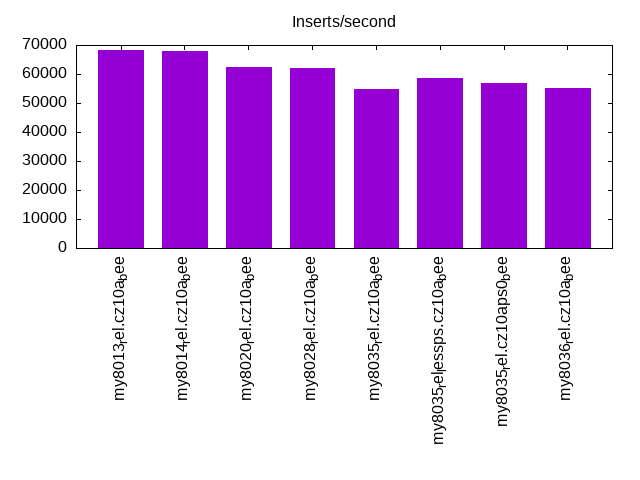
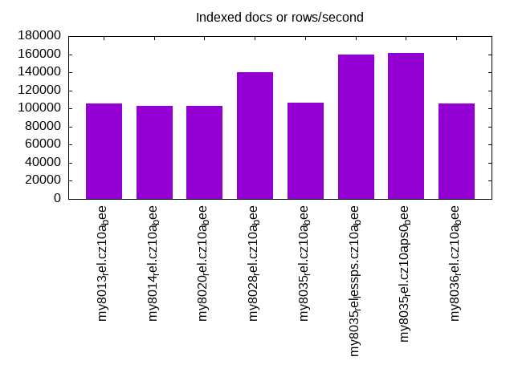
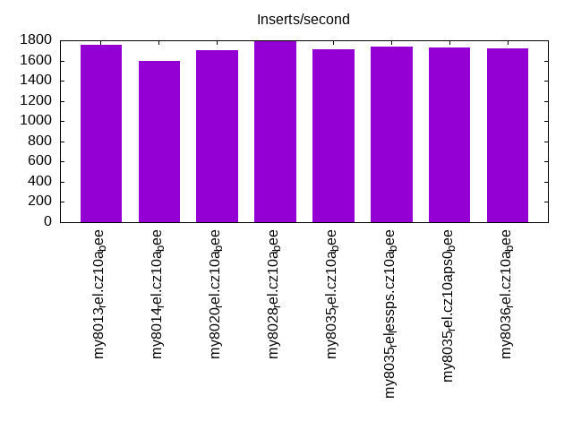
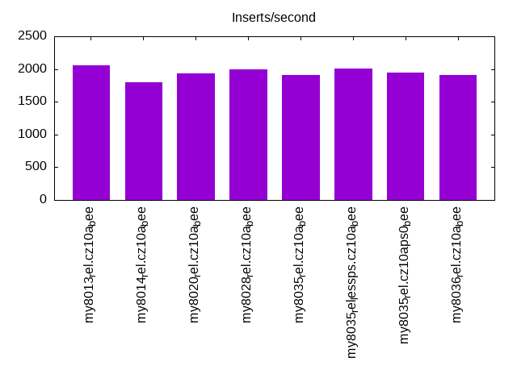
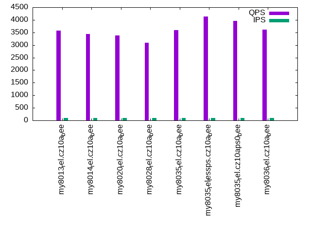
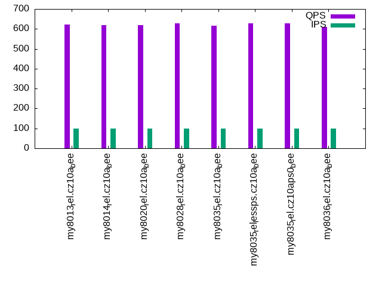
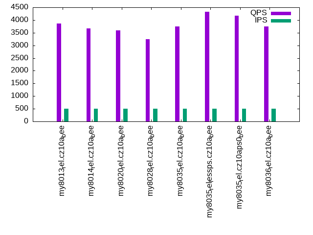
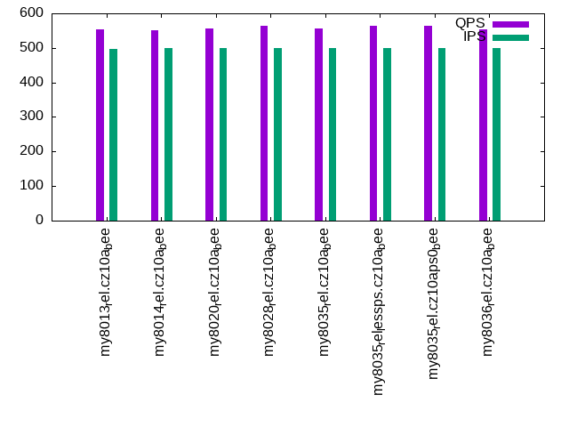
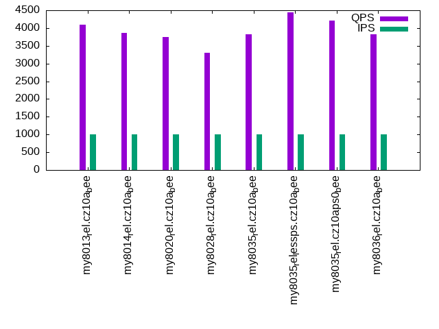
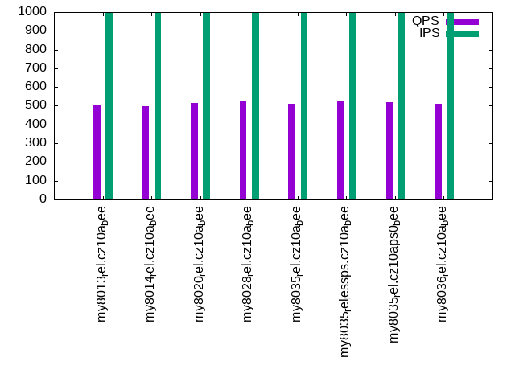

This is a report for the insert benchmark with 800M docs and 1 client(s). It is generated by scripts (bash, awk, sed) and Tufte might not be impressed. An overview of the insert benchmark is here and a short update is here. Below, by DBMS, I mean DBMS+version.config. An example is my8020.c10b40 where my means MySQL, 8020 is version 8.0.20 and c10b40 is the name for the configuration file.
The test server has 8 AMD cores, 16G RAM and an NVMe SSD. It is described here as the Beelink. The benchmark was run with 1 client and there were 1 or 3 connections per client (1 for queries or inserts without rate limits, 1+1 for rate limited inserts+deletes). It uses 1 table. It loads 800M rows per table without secondary indexes, creates 3 secondary indexes per table, then inserts 5m rows per table with a delete per insert to avoid growing the table. It then does 6 read+write tests for 1800s each that do queries as fast as possible with 100,100,500,500,1000,1000 inserts/s and the same for deletes/s per client concurrent with the queries. The database is larger than memory. Clients and the DBMS share one server. The per-database configs are in the per-database subdirectories here.
The tested DBMS are:
The numbers are inserts/s for l.i0, l.i1 and l.i2, indexed docs (or rows) /s for l.x and queries/s for qr100, qp100 thru qr1000, qp1000" The values are the average rate over the entire test for inserts (IPS) and queries (QPS). The range of values for IPS and QPS is split into 3 parts: bottom 25%, middle 50%, top 25%. Values in the bottom 25% have a red background, values in the top 25% have a green background and values in the middle have no color. A gray background is used for values that can be ignored because the DBMS did not sustain the target insert rate. Red backgrounds are not used when the minimum value is within 80% of the max value.
| dbms | l.i0 | l.x | l.i1 | l.i2 | qr100 | qp100 | qr500 | qp500 | qr1000 | qp1000 |
|---|---|---|---|---|---|---|---|---|---|---|
| my8013_rel.cz10a_bee | 68329 | 105235 | 1752 | 2053 | 3581 | 622 | 3870 | 553 | 4100 | 504 |
| my8014_rel.cz10a_bee | 67883 | 103106 | 1596 | 1802 | 3434 | 619 | 3679 | 550 | 3867 | 498 |
| my8020_rel.cz10a_bee | 62554 | 103172 | 1706 | 1934 | 3378 | 618 | 3599 | 555 | 3756 | 517 |
| my8028_rel.cz10a_bee | 62174 | 139714 | 1800 | 1992 | 3094 | 627 | 3249 | 565 | 3300 | 523 |
| my8035_rel.cz10a_bee | 54949 | 106738 | 1712 | 1905 | 3593 | 615 | 3738 | 556 | 3828 | 512 |
| my8035_rel_lessps.cz10a_bee | 58582 | 159267 | 1738 | 2008 | 4130 | 628 | 4334 | 565 | 4449 | 522 |
| my8035_rel.cz10aps0_bee | 56798 | 161258 | 1725 | 1946 | 3956 | 629 | 4174 | 563 | 4219 | 520 |
| my8036_rel.cz10a_bee | 55021 | 105152 | 1721 | 1912 | 3604 | 611 | 3750 | 553 | 3819 | 511 |
This table has relative throughput, throughput for the DBMS relative to the DBMS in the first line, using the absolute throughput from the previous table. Values less than 0.95 have a yellow background. Values greater than 1.05 have a blue background.
| dbms | l.i0 | l.x | l.i1 | l.i2 | qr100 | qp100 | qr500 | qp500 | qr1000 | qp1000 |
|---|---|---|---|---|---|---|---|---|---|---|
| my8013_rel.cz10a_bee | 1.00 | 1.00 | 1.00 | 1.00 | 1.00 | 1.00 | 1.00 | 1.00 | 1.00 | 1.00 |
| my8014_rel.cz10a_bee | 0.99 | 0.98 | 0.91 | 0.88 | 0.96 | 1.00 | 0.95 | 0.99 | 0.94 | 0.99 |
| my8020_rel.cz10a_bee | 0.92 | 0.98 | 0.97 | 0.94 | 0.94 | 0.99 | 0.93 | 1.00 | 0.92 | 1.03 |
| my8028_rel.cz10a_bee | 0.91 | 1.33 | 1.03 | 0.97 | 0.86 | 1.01 | 0.84 | 1.02 | 0.80 | 1.04 |
| my8035_rel.cz10a_bee | 0.80 | 1.01 | 0.98 | 0.93 | 1.00 | 0.99 | 0.97 | 1.01 | 0.93 | 1.02 |
| my8035_rel_lessps.cz10a_bee | 0.86 | 1.51 | 0.99 | 0.98 | 1.15 | 1.01 | 1.12 | 1.02 | 1.09 | 1.04 |
| my8035_rel.cz10aps0_bee | 0.83 | 1.53 | 0.98 | 0.95 | 1.10 | 1.01 | 1.08 | 1.02 | 1.03 | 1.03 |
| my8036_rel.cz10a_bee | 0.81 | 1.00 | 0.98 | 0.93 | 1.01 | 0.98 | 0.97 | 1.00 | 0.93 | 1.01 |
This lists the average rate of inserts/s for the tests that do inserts concurrent with queries. For such tests the query rate is listed in the table above. The read+write tests are setup so that the insert rate should match the target rate every second. Cells that are not at least 95% of the target have a red background to indicate a failure to satisfy the target.
| dbms | qr100.L1 | qp100.L2 | qr500.L3 | qp500.L4 | qr1000.L5 | qp1000.L6 |
|---|---|---|---|---|---|---|
| my8013_rel.cz10a_bee | 100 | 100 | 499 | 498 | 997 | 997 |
| my8014_rel.cz10a_bee | 100 | 100 | 499 | 499 | 998 | 998 |
| my8020_rel.cz10a_bee | 100 | 100 | 499 | 499 | 998 | 998 |
| my8028_rel.cz10a_bee | 100 | 100 | 499 | 499 | 998 | 998 |
| my8035_rel.cz10a_bee | 100 | 100 | 499 | 499 | 999 | 998 |
| my8035_rel_lessps.cz10a_bee | 100 | 100 | 499 | 499 | 998 | 998 |
| my8035_rel.cz10aps0_bee | 100 | 100 | 499 | 499 | 998 | 999 |
| my8036_rel.cz10a_bee | 100 | 100 | 499 | 499 | 998 | 998 |
| target | 100 | 100 | 500 | 500 | 1000 | 1000 |
l.i0: load without secondary indexes. Graphs for performance per 1-second interval are here.
Average throughput:
Insert response time histogram: each cell has the percentage of responses that take <= the time in the header and max is the max response time in seconds. For the max column values in the top 25% of the range have a red background and in the bottom 25% of the range have a green background. The red background is not used when the min value is within 80% of the max value.
| dbms | 256us | 1ms | 4ms | 16ms | 64ms | 256ms | 1s | 4s | 16s | gt | max |
|---|---|---|---|---|---|---|---|---|---|---|---|
| my8013_rel.cz10a_bee | 99.483 | 0.381 | 0.134 | 0.002 | 0.104 | ||||||
| my8014_rel.cz10a_bee | 99.398 | 0.445 | 0.154 | 0.003 | 0.111 | ||||||
| my8020_rel.cz10a_bee | 99.364 | 0.460 | 0.172 | 0.004 | 0.126 | ||||||
| my8028_rel.cz10a_bee | 99.464 | 0.386 | 0.146 | 0.004 | 0.107 | ||||||
| my8035_rel.cz10a_bee | 99.406 | 0.445 | 0.146 | 0.003 | 0.183 | ||||||
| my8035_rel_lessps.cz10a_bee | 99.432 | 0.424 | 0.141 | 0.003 | 0.176 | ||||||
| my8035_rel.cz10aps0_bee | 99.417 | 0.437 | 0.143 | 0.003 | 0.092 | ||||||
| my8036_rel.cz10a_bee | 99.405 | 0.445 | 0.146 | 0.003 | 0.107 |
Performance metrics for the DBMS listed above. Some are normalized by throughput, others are not. Legend for results is here.
ips qps rps rmbps wps wmbps rpq rkbpq wpi wkbpi csps cpups cspq cpupq dbgb1 dbgb2 rss maxop p50 p99 tag 68329 0 22 0.1 363.4 26.0 0.000 0.001 0.005 0.389 55849 34.9 0.817 41 52.4 69.0 11.0 0.104 68426 60634 my8013_rel.cz10a_bee 67883 0 21 0.1 362.5 25.8 0.000 0.001 0.005 0.389 19399 22.9 0.286 27 52.4 69.0 11.1 0.111 67926 60455 my8014_rel.cz10a_bee 62554 0 0 0.0 388.3 23.5 0.000 0.000 0.006 0.385 17227 22.0 0.275 28 52.4 69.0 11.1 0.126 62466 55340 my8020_rel.cz10a_bee 62174 0 0 0.0 382.3 23.4 0.000 0.000 0.006 0.385 7186 21.0 0.116 27 52.4 69.0 11.0 0.107 62382 55556 my8028_rel.cz10a_bee 54949 0 0 0.0 338.5 20.8 0.000 0.000 0.006 0.388 6574 20.2 0.120 29 52.4 69.0 11.1 0.183 55081 49758 my8035_rel.cz10a_bee 58582 0 0 0.0 360.3 22.2 0.000 0.000 0.006 0.389 6980 20.9 0.119 29 52.4 69.0 10.7 0.176 58742 52940 my8035_rel_lessps.cz10a_bee 56798 0 0 0.0 349.3 21.6 0.000 0.000 0.006 0.389 6779 20.5 0.119 29 52.4 69.0 10.8 0.092 56933 51341 my8035_rel.cz10aps0_bee 55021 0 0 0.0 339.0 20.9 0.000 0.000 0.006 0.389 6582 20.2 0.120 29 52.4 69.0 11.1 0.107 55152 49746 my8036_rel.cz10a_bee
l.x: create secondary indexes.
Average throughput:
Performance metrics for the DBMS listed above. Some are normalized by throughput, others are not. Legend for results is here.
ips qps rps rmbps wps wmbps rpq rkbpq wpi wkbpi csps cpups cspq cpupq dbgb1 dbgb2 rss maxop p50 p99 tag 105235 0 688 106.1 815.5 125.5 0.007 1.032 0.008 1.222 10356 14.1 0.098 11 120.7 137.2 10.4 0.005 NA NA my8013_rel.cz10a_bee 103106 0 640 103.6 782.2 122.8 0.006 1.029 0.008 1.219 7072 12.2 0.069 9 120.7 137.2 10.5 0.005 NA NA my8014_rel.cz10a_bee 103172 0 638 103.7 891.4 122.9 0.006 1.029 0.009 1.220 6704 12.1 0.065 9 120.7 137.3 11.2 0.003 NA NA my8020_rel.cz10a_bee 139714 0 2346 222.4 2854.8 199.9 0.017 1.630 0.020 1.465 11025 42.5 0.079 24 120.7 137.3 11.2 0.004 NA NA my8028_rel.cz10a_bee 106738 0 1792 169.8 2181.0 152.7 0.017 1.629 0.020 1.465 8827 43.5 0.083 33 120.7 137.3 11.2 0.004 NA NA my8035_rel.cz10a_bee 159267 0 2675 253.6 3245.2 227.8 0.017 1.630 0.020 1.465 12843 40.8 0.081 20 120.7 137.3 10.9 0.003 NA NA my8035_rel_lessps.cz10a_bee 161258 0 2705 256.2 3287.6 230.8 0.017 1.627 0.020 1.466 13075 40.7 0.081 20 120.7 137.3 11.0 0.003 NA NA my8035_rel.cz10aps0_bee 105152 0 1765 167.4 2146.0 150.4 0.017 1.630 0.020 1.465 8686 43.6 0.083 33 120.7 137.3 11.2 0.004 NA NA my8036_rel.cz10a_bee
l.i1: continue load after secondary indexes created with 50 inserts per transaction. Graphs for performance per 1-second interval are here.
Average throughput:
Insert response time histogram: each cell has the percentage of responses that take <= the time in the header and max is the max response time in seconds. For the max column values in the top 25% of the range have a red background and in the bottom 25% of the range have a green background. The red background is not used when the min value is within 80% of the max value.
| dbms | 256us | 1ms | 4ms | 16ms | 64ms | 256ms | 1s | 4s | 16s | gt | max |
|---|---|---|---|---|---|---|---|---|---|---|---|
| my8013_rel.cz10a_bee | 22.804 | 71.418 | 5.775 | 0.004 | 0.405 | ||||||
| my8014_rel.cz10a_bee | 13.581 | 80.082 | 6.333 | 0.004 | 0.396 | ||||||
| my8020_rel.cz10a_bee | 16.574 | 77.771 | 5.655 | 0.256 | |||||||
| my8028_rel.cz10a_bee | 22.089 | 72.719 | 5.190 | 0.003 | 0.467 | ||||||
| my8035_rel.cz10a_bee | 16.773 | 77.761 | 5.465 | 0.001 | 0.261 | ||||||
| my8035_rel_lessps.cz10a_bee | 19.220 | 75.355 | 5.425 | 0.212 | |||||||
| my8035_rel.cz10aps0_bee | 17.992 | 76.578 | 5.429 | 0.001 | 0.288 | ||||||
| my8036_rel.cz10a_bee | 17.570 | 77.000 | 5.430 | 0.249 |
Delete response time histogram: each cell has the percentage of responses that take <= the time in the header and max is the max response time in seconds. For the max column values in the top 25% of the range have a red background and in the bottom 25% of the range have a green background. The red background is not used when the min value is within 80% of the max value.
| dbms | 256us | 1ms | 4ms | 16ms | 64ms | 256ms | 1s | 4s | 16s | gt | max |
|---|---|---|---|---|---|---|---|---|---|---|---|
| my8013_rel.cz10a_bee | 81.141 | 17.752 | 1.076 | 0.030 | 0.150 | ||||||
| my8014_rel.cz10a_bee | 70.868 | 27.776 | 1.325 | 0.031 | 0.135 | ||||||
| my8020_rel.cz10a_bee | 73.189 | 25.725 | 1.061 | 0.025 | 0.107 | ||||||
| my8028_rel.cz10a_bee | 70.976 | 28.759 | 0.261 | 0.004 | 0.130 | ||||||
| my8035_rel.cz10a_bee | 47.145 | 52.521 | 0.329 | 0.005 | 0.076 | ||||||
| my8035_rel_lessps.cz10a_bee | 59.496 | 40.151 | 0.346 | 0.006 | 0.102 | ||||||
| my8035_rel.cz10aps0_bee | 53.604 | 46.084 | 0.310 | 0.003 | 0.068 | ||||||
| my8036_rel.cz10a_bee | 47.870 | 51.776 | 0.354 | 0.061 |
Performance metrics for the DBMS listed above. Some are normalized by throughput, others are not. Legend for results is here.
ips qps rps rmbps wps wmbps rpq rkbpq wpi wkbpi csps cpups cspq cpupq dbgb1 dbgb2 rss maxop p50 p99 tag 1752 0 8973 140.2 11206.0 361.1 5.121 81.941 6.396 211.051 93426 33.4 53.325 1525 150.0 166.6 10.7 0.405 1648 949 my8013_rel.cz10a_bee 1596 0 8171 127.7 10125.3 328.6 5.121 81.944 6.346 210.902 76633 18.9 48.031 948 150.0 166.6 10.5 0.396 1500 849 my8014_rel.cz10a_bee 1706 0 8804 137.6 13131.1 353.9 5.162 82.584 7.698 212.464 68615 17.3 40.227 811 149.6 166.4 10.5 0.256 1648 849 my8020_rel.cz10a_bee 1800 0 9270 144.8 13861.2 373.7 5.150 82.398 7.700 212.597 60823 21.8 33.789 969 149.6 166.3 10.7 0.467 1748 949 my8028_rel.cz10a_bee 1712 0 8835 138.0 13249.7 367.6 5.160 82.552 7.738 219.821 55841 22.8 32.611 1065 149.5 166.3 10.7 0.261 1648 899 my8035_rel.cz10a_bee 1738 0 8958 140.0 13417.9 372.3 5.155 82.486 7.722 219.413 56849 22.6 32.717 1041 149.6 166.4 10.6 0.212 1648 900 my8035_rel_lessps.cz10a_bee 1725 0 8871 138.6 13311.9 369.3 5.143 82.292 7.718 219.245 56185 22.8 32.575 1058 149.6 166.3 10.7 0.288 1648 949 my8035_rel.cz10aps0_bee 1721 0 8862 138.5 13288.6 368.6 5.149 82.380 7.721 219.326 56029 22.8 32.554 1060 149.6 166.3 10.7 0.249 1648 899 my8036_rel.cz10a_bee
l.i2: continue load after secondary indexes created with 5 inserts per transaction. Graphs for performance per 1-second interval are here.
Average throughput:
Insert response time histogram: each cell has the percentage of responses that take <= the time in the header and max is the max response time in seconds. For the max column values in the top 25% of the range have a red background and in the bottom 25% of the range have a green background. The red background is not used when the min value is within 80% of the max value.
| dbms | 256us | 1ms | 4ms | 16ms | 64ms | 256ms | 1s | 4s | 16s | gt | max |
|---|---|---|---|---|---|---|---|---|---|---|---|
| my8013_rel.cz10a_bee | 7.239 | 85.565 | 6.324 | 0.869 | 0.003 | 0.088 | |||||
| my8014_rel.cz10a_bee | 3.517 | 87.070 | 8.636 | 0.773 | 0.003 | 0.097 | |||||
| my8020_rel.cz10a_bee | 4.154 | 90.511 | 4.507 | 0.819 | 0.010 | 0.144 | |||||
| my8028_rel.cz10a_bee | 3.712 | 90.631 | 5.132 | 0.523 | 0.001 | 0.068 | |||||
| my8035_rel.cz10a_bee | 2.627 | 91.239 | 5.518 | 0.617 | 0.001 | 0.077 | |||||
| my8035_rel_lessps.cz10a_bee | 4.250 | 90.020 | 5.163 | 0.564 | 0.002 | 0.083 | |||||
| my8035_rel.cz10aps0_bee | 3.365 | 90.665 | 5.365 | 0.603 | 0.002 | 0.085 | |||||
| my8036_rel.cz10a_bee | 2.724 | 91.200 | 5.470 | 0.605 | 0.001 | 0.064 |
Delete response time histogram: each cell has the percentage of responses that take <= the time in the header and max is the max response time in seconds. For the max column values in the top 25% of the range have a red background and in the bottom 25% of the range have a green background. The red background is not used when the min value is within 80% of the max value.
| dbms | 256us | 1ms | 4ms | 16ms | 64ms | 256ms | 1s | 4s | 16s | gt | max |
|---|---|---|---|---|---|---|---|---|---|---|---|
| my8013_rel.cz10a_bee | 62.184 | 36.984 | 0.656 | 0.176 | 0.001 | 0.100 | |||||
| my8014_rel.cz10a_bee | 44.897 | 53.727 | 1.164 | 0.211 | 0.001 | 0.069 | |||||
| my8020_rel.cz10a_bee | 49.256 | 49.801 | 0.766 | 0.176 | 0.002 | 0.128 | |||||
| my8028_rel.cz10a_bee | 30.416 | 69.006 | 0.538 | 0.040 | 0.049 | ||||||
| my8035_rel.cz10a_bee | 15.756 | 83.627 | 0.565 | 0.052 | 0.063 | ||||||
| my8035_rel_lessps.cz10a_bee | 28.775 | 70.663 | 0.523 | 0.038 | 0.046 | ||||||
| my8035_rel.cz10aps0_bee | 20.873 | 78.527 | 0.546 | 0.053 | 0.051 | ||||||
| my8036_rel.cz10a_bee | 15.007 | 84.361 | 0.576 | 0.056 | 0.048 |
Performance metrics for the DBMS listed above. Some are normalized by throughput, others are not. Legend for results is here.
ips qps rps rmbps wps wmbps rpq rkbpq wpi wkbpi csps cpups cspq cpupq dbgb1 dbgb2 rss maxop p50 p99 tag 2053 0 8072 126.1 9999.5 311.9 3.931 62.902 4.870 155.536 94898 40.5 46.217 1578 150.0 166.9 10.7 0.088 2038 1655 my8013_rel.cz10a_bee 1802 0 7363 115.0 8987.8 282.8 4.086 65.382 4.988 160.732 81949 28.6 45.482 1270 150.0 166.8 10.5 0.097 1749 1470 my8014_rel.cz10a_bee 1934 0 7993 124.9 11782.6 307.0 4.133 66.121 6.092 162.530 76380 28.7 39.489 1187 149.6 166.4 10.5 0.144 1874 1634 my8020_rel.cz10a_bee 1992 0 8394 131.2 12342.7 321.9 4.214 67.423 6.196 165.453 61348 30.9 30.797 1241 149.6 166.4 10.7 0.068 1949 1713 my8028_rel.cz10a_bee 1905 0 8092 126.4 11910.1 318.3 4.249 67.978 6.253 171.134 56420 31.8 29.622 1336 149.5 166.4 10.7 0.077 1858 1664 my8035_rel.cz10a_bee 2008 0 8271 129.2 12209.3 326.2 4.119 65.902 6.080 166.369 58517 31.8 29.142 1267 149.6 166.4 10.6 0.083 1948 1728 my8035_rel_lessps.cz10a_bee 1946 0 8154 127.4 12021.1 321.2 4.191 67.055 6.179 169.066 57640 32.0 29.628 1316 149.6 166.5 10.7 0.085 1903 1698 my8035_rel.cz10aps0_bee 1912 0 8088 126.4 11931.0 318.8 4.230 67.684 6.240 170.742 57007 32.2 29.816 1347 149.6 166.4 10.7 0.064 1873 1673 my8036_rel.cz10a_bee
qr100.L1: range queries with 100 insert/s per client. Graphs for performance per 1-second interval are here.
Average throughput:
Query response time histogram: each cell has the percentage of responses that take <= the time in the header and max is the max response time in seconds. For max values in the top 25% of the range have a red background and in the bottom 25% of the range have a green background. The red background is not used when the min value is within 80% of the max value.
| dbms | 256us | 1ms | 4ms | 16ms | 64ms | 256ms | 1s | 4s | 16s | gt | max |
|---|---|---|---|---|---|---|---|---|---|---|---|
| my8013_rel.cz10a_bee | 56.205 | 43.610 | 0.171 | 0.015 | nonzero | 0.036 | |||||
| my8014_rel.cz10a_bee | 47.037 | 52.766 | 0.181 | 0.016 | nonzero | 0.035 | |||||
| my8020_rel.cz10a_bee | 40.364 | 59.436 | 0.182 | 0.017 | nonzero | 0.045 | |||||
| my8028_rel.cz10a_bee | 28.441 | 71.348 | 0.197 | 0.014 | 0.012 | ||||||
| my8035_rel.cz10a_bee | 53.250 | 46.745 | 0.005 | 0.001 | nonzero | 0.046 | |||||
| my8035_rel_lessps.cz10a_bee | 70.826 | 29.168 | 0.005 | nonzero | nonzero | 0.033 | |||||
| my8035_rel.cz10aps0_bee | 67.540 | 32.453 | 0.006 | 0.001 | nonzero | 0.031 | |||||
| my8036_rel.cz10a_bee | 54.508 | 45.486 | 0.005 | 0.001 | 0.009 |
Insert response time histogram: each cell has the percentage of responses that take <= the time in the header and max is the max response time in seconds. For max values in the top 25% of the range have a red background and in the bottom 25% of the range have a green background. The red background is not used when the min value is within 80% of the max value.
| dbms | 256us | 1ms | 4ms | 16ms | 64ms | 256ms | 1s | 4s | 16s | gt | max |
|---|---|---|---|---|---|---|---|---|---|---|---|
| my8013_rel.cz10a_bee | 14.083 | 85.917 | 0.045 | ||||||||
| my8014_rel.cz10a_bee | 5.722 | 94.250 | 0.028 | 0.072 | |||||||
| my8020_rel.cz10a_bee | 7.111 | 92.889 | 0.053 | ||||||||
| my8028_rel.cz10a_bee | 16.167 | 83.833 | 0.035 | ||||||||
| my8035_rel.cz10a_bee | 7.806 | 91.722 | 0.472 | 0.114 | |||||||
| my8035_rel_lessps.cz10a_bee | 11.917 | 88.083 | 0.037 | ||||||||
| my8035_rel.cz10aps0_bee | 10.139 | 89.861 | 0.061 | ||||||||
| my8036_rel.cz10a_bee | 8.556 | 91.250 | 0.194 | 0.104 |
Delete response time histogram: each cell has the percentage of responses that take <= the time in the header and max is the max response time in seconds. For max values in the top 25% of the range have a red background and in the bottom 25% of the range have a green background. The red background is not used when the min value is within 80% of the max value.
| dbms | 256us | 1ms | 4ms | 16ms | 64ms | 256ms | 1s | 4s | 16s | gt | max |
|---|---|---|---|---|---|---|---|---|---|---|---|
| my8013_rel.cz10a_bee | 95.972 | 3.944 | 0.083 | 0.019 | |||||||
| my8014_rel.cz10a_bee | 94.000 | 5.917 | 0.083 | 0.046 | |||||||
| my8020_rel.cz10a_bee | 93.639 | 6.361 | 0.015 | ||||||||
| my8028_rel.cz10a_bee | 99.222 | 0.778 | 0.014 | ||||||||
| my8035_rel.cz10a_bee | 97.056 | 2.278 | 0.667 | 0.043 | |||||||
| my8035_rel_lessps.cz10a_bee | 98.222 | 1.778 | 0.012 | ||||||||
| my8035_rel.cz10aps0_bee | 98.722 | 1.139 | 0.139 | 0.025 | |||||||
| my8036_rel.cz10a_bee | 98.639 | 1.222 | 0.139 | 0.039 |
Performance metrics for the DBMS listed above. Some are normalized by throughput, others are not. Legend for results is here.
ips qps rps rmbps wps wmbps rpq rkbpq wpi wkbpi csps cpups cspq cpupq dbgb1 dbgb2 rss maxop p50 p99 tag 100 3581 958 15.0 892.5 27.2 0.268 4.281 8.961 279.269 24340 15.3 6.797 342 150.0 166.9 10.7 0.036 3548 2253 my8013_rel.cz10a_bee 100 3434 956 14.9 868.0 26.6 0.278 4.454 8.697 273.081 20678 14.4 6.022 336 150.0 166.8 10.5 0.035 3404 2286 my8014_rel.cz10a_bee 100 3378 828 12.9 863.2 22.1 0.245 3.922 8.649 226.511 18599 14.0 5.506 332 149.6 166.4 10.5 0.045 3356 2399 my8020_rel.cz10a_bee 100 3094 633 9.9 568.5 14.6 0.205 3.274 5.702 150.334 15007 13.3 4.851 344 149.6 166.4 10.7 0.012 3084 2104 my8028_rel.cz10a_bee 100 3593 582 9.1 631.0 16.6 0.162 2.590 6.323 170.354 17037 13.9 4.742 309 149.5 166.4 10.7 0.046 3548 3308 my8035_rel.cz10a_bee 100 4130 651 10.2 739.9 19.4 0.158 2.522 7.421 199.604 19521 14.1 4.726 273 149.6 166.4 10.6 0.033 4060 3756 my8035_rel_lessps.cz10a_bee 100 3956 630 9.9 720.9 18.9 0.159 2.550 7.231 194.358 18774 14.2 4.745 287 149.6 166.5 10.7 0.031 3900 3596 my8035_rel.cz10aps0_bee 100 3604 590 9.2 652.6 17.2 0.164 2.621 6.539 176.023 17135 14.0 4.754 311 149.6 166.4 10.7 0.009 3564 3324 my8036_rel.cz10a_bee
qp100.L2: point queries with 100 insert/s per client. Graphs for performance per 1-second interval are here.
Average throughput:
Query response time histogram: each cell has the percentage of responses that take <= the time in the header and max is the max response time in seconds. For max values in the top 25% of the range have a red background and in the bottom 25% of the range have a green background. The red background is not used when the min value is within 80% of the max value.
| dbms | 256us | 1ms | 4ms | 16ms | 64ms | 256ms | 1s | 4s | 16s | gt | max |
|---|---|---|---|---|---|---|---|---|---|---|---|
| my8013_rel.cz10a_bee | 0.186 | 99.487 | 0.326 | 0.001 | 0.037 | ||||||
| my8014_rel.cz10a_bee | 0.145 | 99.501 | 0.353 | 0.001 | 0.036 | ||||||
| my8020_rel.cz10a_bee | 0.131 | 99.649 | 0.220 | 0.001 | 0.043 | ||||||
| my8028_rel.cz10a_bee | 0.168 | 99.586 | 0.244 | 0.001 | 0.041 | ||||||
| my8035_rel.cz10a_bee | 0.106 | 99.645 | 0.248 | 0.001 | 0.045 | ||||||
| my8035_rel_lessps.cz10a_bee | 0.180 | 99.603 | 0.215 | 0.001 | 0.042 | ||||||
| my8035_rel.cz10aps0_bee | 0.186 | 99.577 | 0.236 | 0.001 | 0.044 | ||||||
| my8036_rel.cz10a_bee | 0.098 | 99.533 | 0.368 | 0.002 | 0.042 |
Insert response time histogram: each cell has the percentage of responses that take <= the time in the header and max is the max response time in seconds. For max values in the top 25% of the range have a red background and in the bottom 25% of the range have a green background. The red background is not used when the min value is within 80% of the max value.
| dbms | 256us | 1ms | 4ms | 16ms | 64ms | 256ms | 1s | 4s | 16s | gt | max |
|---|---|---|---|---|---|---|---|---|---|---|---|
| my8013_rel.cz10a_bee | 13.056 | 86.917 | 0.028 | 0.065 | |||||||
| my8014_rel.cz10a_bee | 4.056 | 95.917 | 0.028 | 0.111 | |||||||
| my8020_rel.cz10a_bee | 4.556 | 95.444 | 0.057 | ||||||||
| my8028_rel.cz10a_bee | 14.972 | 85.028 | 0.041 | ||||||||
| my8035_rel.cz10a_bee | 7.583 | 92.417 | 0.056 | ||||||||
| my8035_rel_lessps.cz10a_bee | 9.417 | 90.583 | 0.039 | ||||||||
| my8035_rel.cz10aps0_bee | 8.722 | 91.278 | 0.043 | ||||||||
| my8036_rel.cz10a_bee | 3.833 | 96.139 | 0.028 | 0.066 |
Delete response time histogram: each cell has the percentage of responses that take <= the time in the header and max is the max response time in seconds. For max values in the top 25% of the range have a red background and in the bottom 25% of the range have a green background. The red background is not used when the min value is within 80% of the max value.
| dbms | 256us | 1ms | 4ms | 16ms | 64ms | 256ms | 1s | 4s | 16s | gt | max |
|---|---|---|---|---|---|---|---|---|---|---|---|
| my8013_rel.cz10a_bee | 97.389 | 2.611 | 0.012 | ||||||||
| my8014_rel.cz10a_bee | 96.250 | 3.722 | 0.028 | 0.023 | |||||||
| my8020_rel.cz10a_bee | 95.194 | 4.722 | 0.083 | 0.019 | |||||||
| my8028_rel.cz10a_bee | 98.528 | 1.472 | 0.015 | ||||||||
| my8035_rel.cz10a_bee | 97.861 | 2.139 | 0.016 | ||||||||
| my8035_rel_lessps.cz10a_bee | 98.694 | 1.306 | 0.011 | ||||||||
| my8035_rel.cz10aps0_bee | 98.667 | 1.333 | 0.012 | ||||||||
| my8036_rel.cz10a_bee | 98.472 | 1.500 | 0.028 | 0.022 |
Performance metrics for the DBMS listed above. Some are normalized by throughput, others are not. Legend for results is here.
ips qps rps rmbps wps wmbps rpq rkbpq wpi wkbpi csps cpups cspq cpupq dbgb1 dbgb2 rss maxop p50 p99 tag 100 622 6178 96.5 990.9 30.1 9.926 158.809 9.959 309.718 22075 6.1 35.468 784 150.0 166.9 10.7 0.037 624 543 my8013_rel.cz10a_bee 100 619 6136 95.9 988.7 30.2 9.915 158.648 9.917 310.539 19435 5.7 31.407 737 150.0 166.8 10.5 0.036 623 559 my8014_rel.cz10a_bee 100 618 6123 95.7 1177.3 29.9 9.899 158.389 11.796 306.811 18199 5.5 29.425 711 149.6 166.4 10.5 0.043 623 559 my8020_rel.cz10a_bee 100 627 6196 96.8 1187.0 30.0 9.881 158.092 11.894 307.978 17945 5.5 28.615 702 149.6 166.4 10.7 0.041 624 575 my8028_rel.cz10a_bee 100 615 6098 95.3 1136.4 29.2 9.916 158.653 11.398 299.871 17650 5.9 28.699 768 149.5 166.4 10.7 0.045 623 559 my8035_rel.cz10a_bee 100 628 6202 96.9 1138.7 29.3 9.869 157.909 11.410 300.211 17939 5.5 28.548 700 149.6 166.4 10.6 0.042 639 575 my8035_rel_lessps.cz10a_bee 100 629 6212 97.1 1143.8 29.4 9.871 157.928 11.460 301.469 17950 5.7 28.523 725 149.6 166.5 10.7 0.044 639 575 my8035_rel.cz10aps0_bee 100 611 6059 94.7 1133.4 29.1 9.916 158.649 11.357 298.839 17530 6.1 28.686 799 149.6 166.4 10.7 0.042 623 543 my8036_rel.cz10a_bee
qr500.L3: range queries with 500 insert/s per client. Graphs for performance per 1-second interval are here.
Average throughput:
Query response time histogram: each cell has the percentage of responses that take <= the time in the header and max is the max response time in seconds. For max values in the top 25% of the range have a red background and in the bottom 25% of the range have a green background. The red background is not used when the min value is within 80% of the max value.
| dbms | 256us | 1ms | 4ms | 16ms | 64ms | 256ms | 1s | 4s | 16s | gt | max |
|---|---|---|---|---|---|---|---|---|---|---|---|
| my8013_rel.cz10a_bee | 66.892 | 32.906 | 0.180 | 0.023 | 0.013 | ||||||
| my8014_rel.cz10a_bee | 59.046 | 40.745 | 0.186 | 0.023 | nonzero | 0.037 | |||||
| my8020_rel.cz10a_bee | 53.009 | 46.773 | 0.188 | 0.030 | nonzero | 0.040 | |||||
| my8028_rel.cz10a_bee | 38.424 | 61.336 | 0.211 | 0.029 | nonzero | 0.036 | |||||
| my8035_rel.cz10a_bee | 58.840 | 41.151 | 0.008 | 0.001 | 0.011 | ||||||
| my8035_rel_lessps.cz10a_bee | 75.891 | 24.102 | 0.006 | 0.001 | nonzero | 0.027 | |||||
| my8035_rel.cz10aps0_bee | 73.031 | 26.962 | 0.006 | 0.001 | nonzero | 0.023 | |||||
| my8036_rel.cz10a_bee | 59.465 | 40.526 | 0.008 | 0.001 | 0.010 |
Insert response time histogram: each cell has the percentage of responses that take <= the time in the header and max is the max response time in seconds. For max values in the top 25% of the range have a red background and in the bottom 25% of the range have a green background. The red background is not used when the min value is within 80% of the max value.
| dbms | 256us | 1ms | 4ms | 16ms | 64ms | 256ms | 1s | 4s | 16s | gt | max |
|---|---|---|---|---|---|---|---|---|---|---|---|
| my8013_rel.cz10a_bee | 65.044 | 34.950 | 0.006 | 0.069 | |||||||
| my8014_rel.cz10a_bee | 54.461 | 45.539 | 0.053 | ||||||||
| my8020_rel.cz10a_bee | 57.989 | 41.983 | 0.028 | 0.080 | |||||||
| my8028_rel.cz10a_bee | 70.389 | 29.611 | 0.036 | ||||||||
| my8035_rel.cz10a_bee | 58.406 | 41.583 | 0.011 | 0.083 | |||||||
| my8035_rel_lessps.cz10a_bee | 63.222 | 36.778 | 0.048 | ||||||||
| my8035_rel.cz10aps0_bee | 60.489 | 39.511 | 0.039 | ||||||||
| my8036_rel.cz10a_bee | 37.833 | 62.167 | 0.048 |
Delete response time histogram: each cell has the percentage of responses that take <= the time in the header and max is the max response time in seconds. For max values in the top 25% of the range have a red background and in the bottom 25% of the range have a green background. The red background is not used when the min value is within 80% of the max value.
| dbms | 256us | 1ms | 4ms | 16ms | 64ms | 256ms | 1s | 4s | 16s | gt | max |
|---|---|---|---|---|---|---|---|---|---|---|---|
| my8013_rel.cz10a_bee | 95.783 | 4.167 | 0.050 | 0.028 | |||||||
| my8014_rel.cz10a_bee | 93.700 | 6.272 | 0.028 | 0.021 | |||||||
| my8020_rel.cz10a_bee | 92.589 | 7.372 | 0.039 | 0.024 | |||||||
| my8028_rel.cz10a_bee | 98.917 | 1.083 | 0.013 | ||||||||
| my8035_rel.cz10a_bee | 97.250 | 2.728 | 0.022 | 0.031 | |||||||
| my8035_rel_lessps.cz10a_bee | 97.928 | 2.061 | 0.011 | 0.020 | |||||||
| my8035_rel.cz10aps0_bee | 98.372 | 1.617 | 0.011 | 0.017 | |||||||
| my8036_rel.cz10a_bee | 97.617 | 2.350 | 0.033 | 0.020 |
Performance metrics for the DBMS listed above. Some are normalized by throughput, others are not. Legend for results is here.
ips qps rps rmbps wps wmbps rpq rkbpq wpi wkbpi csps cpups cspq cpupq dbgb1 dbgb2 rss maxop p50 p99 tag 499 3870 3001 46.9 3244.8 100.2 0.775 12.407 6.508 205.854 41391 21.2 10.695 438 150.0 166.9 10.7 0.013 3868 2477 my8013_rel.cz10a_bee 499 3679 2997 46.8 3221.3 100.3 0.815 13.032 6.458 205.902 37107 18.1 10.086 394 150.0 166.8 10.5 0.037 3676 2174 my8014_rel.cz10a_bee 499 3599 2991 46.7 3877.4 100.0 0.831 13.295 7.769 205.152 32738 17.5 9.095 389 149.6 166.4 10.5 0.040 3593 2280 my8020_rel.cz10a_bee 499 3249 2990 46.7 3867.6 99.8 0.920 14.724 7.754 204.854 30081 18.0 9.258 443 149.6 166.4 10.7 0.036 3229 2048 my8028_rel.cz10a_bee 499 3738 2936 45.9 3890.6 102.5 0.785 12.568 7.800 210.372 31771 18.8 8.500 402 149.5 166.4 10.7 0.011 3708 3340 my8035_rel.cz10a_bee 499 4334 2940 45.9 3893.0 102.5 0.678 10.852 7.808 210.588 33967 18.5 7.837 341 149.6 166.4 10.6 0.027 4269 3818 my8035_rel_lessps.cz10a_bee 499 4174 2940 45.9 3891.6 102.5 0.704 11.269 7.802 210.438 33470 18.7 8.018 358 149.6 166.5 10.7 0.023 4123 3660 my8035_rel.cz10aps0_bee 499 3750 2938 45.9 3894.0 102.6 0.783 12.534 7.807 210.554 31892 18.9 8.505 403 149.6 166.4 10.7 0.010 3723 3324 my8036_rel.cz10a_bee
qp500.L4: point queries with 500 insert/s per client. Graphs for performance per 1-second interval are here.
Average throughput:
Query response time histogram: each cell has the percentage of responses that take <= the time in the header and max is the max response time in seconds. For max values in the top 25% of the range have a red background and in the bottom 25% of the range have a green background. The red background is not used when the min value is within 80% of the max value.
| dbms | 256us | 1ms | 4ms | 16ms | 64ms | 256ms | 1s | 4s | 16s | gt | max |
|---|---|---|---|---|---|---|---|---|---|---|---|
| my8013_rel.cz10a_bee | 0.007 | 97.505 | 2.481 | 0.007 | 0.043 | ||||||
| my8014_rel.cz10a_bee | 0.006 | 97.485 | 2.501 | 0.007 | 0.045 | ||||||
| my8020_rel.cz10a_bee | 0.004 | 99.099 | 0.761 | 0.136 | 0.057 | ||||||
| my8028_rel.cz10a_bee | 0.005 | 99.030 | 0.869 | 0.096 | 0.054 | ||||||
| my8035_rel.cz10a_bee | 0.004 | 98.962 | 0.928 | 0.106 | 0.056 | ||||||
| my8035_rel_lessps.cz10a_bee | 0.009 | 99.019 | 0.857 | 0.115 | 0.055 | ||||||
| my8035_rel.cz10aps0_bee | 0.006 | 99.005 | 0.872 | 0.117 | 0.054 | ||||||
| my8036_rel.cz10a_bee | 0.003 | 98.765 | 1.177 | 0.054 | nonzero | 0.069 |
Insert response time histogram: each cell has the percentage of responses that take <= the time in the header and max is the max response time in seconds. For max values in the top 25% of the range have a red background and in the bottom 25% of the range have a green background. The red background is not used when the min value is within 80% of the max value.
| dbms | 256us | 1ms | 4ms | 16ms | 64ms | 256ms | 1s | 4s | 16s | gt | max |
|---|---|---|---|---|---|---|---|---|---|---|---|
| my8013_rel.cz10a_bee | 72.878 | 26.844 | 0.278 | 0.092 | |||||||
| my8014_rel.cz10a_bee | 61.806 | 37.950 | 0.244 | 0.105 | |||||||
| my8020_rel.cz10a_bee | 65.739 | 33.711 | 0.550 | 0.122 | |||||||
| my8028_rel.cz10a_bee | 81.894 | 17.783 | 0.322 | 0.104 | |||||||
| my8035_rel.cz10a_bee | 68.183 | 30.878 | 0.939 | 0.114 | |||||||
| my8035_rel_lessps.cz10a_bee | 75.100 | 24.706 | 0.194 | 0.110 | |||||||
| my8035_rel.cz10aps0_bee | 71.617 | 27.828 | 0.556 | 0.105 | |||||||
| my8036_rel.cz10a_bee | 47.217 | 51.967 | 0.817 | 0.113 |
Delete response time histogram: each cell has the percentage of responses that take <= the time in the header and max is the max response time in seconds. For max values in the top 25% of the range have a red background and in the bottom 25% of the range have a green background. The red background is not used when the min value is within 80% of the max value.
| dbms | 256us | 1ms | 4ms | 16ms | 64ms | 256ms | 1s | 4s | 16s | gt | max |
|---|---|---|---|---|---|---|---|---|---|---|---|
| my8013_rel.cz10a_bee | 94.667 | 4.806 | 0.528 | 0.043 | |||||||
| my8014_rel.cz10a_bee | 91.900 | 7.506 | 0.594 | 0.057 | |||||||
| my8020_rel.cz10a_bee | 92.550 | 7.044 | 0.406 | 0.055 | |||||||
| my8028_rel.cz10a_bee | 98.367 | 1.561 | 0.072 | 0.030 | |||||||
| my8035_rel.cz10a_bee | 95.433 | 4.306 | 0.261 | 0.030 | |||||||
| my8035_rel_lessps.cz10a_bee | 97.778 | 2.094 | 0.128 | 0.045 | |||||||
| my8035_rel.cz10aps0_bee | 96.572 | 3.228 | 0.200 | 0.051 | |||||||
| my8036_rel.cz10a_bee | 95.006 | 4.817 | 0.178 | 0.045 |
Performance metrics for the DBMS listed above. Some are normalized by throughput, others are not. Legend for results is here.
ips qps rps rmbps wps wmbps rpq rkbpq wpi wkbpi csps cpups cspq cpupq dbgb1 dbgb2 rss maxop p50 p99 tag 498 553 8268 129.2 3542.0 108.7 14.948 239.176 7.113 223.465 48027 11.0 86.832 1591 150.0 166.9 10.7 0.043 559 527 my8013_rel.cz10a_bee 499 550 8232 128.6 3512.3 108.6 14.962 239.388 7.037 222.843 37047 10.1 67.334 1469 150.0 166.8 10.5 0.045 544 512 my8014_rel.cz10a_bee 499 555 8272 129.3 4219.5 108.3 14.894 238.302 8.454 222.242 32312 9.1 58.178 1311 149.6 166.4 10.5 0.057 559 527 my8020_rel.cz10a_bee 499 565 8361 130.6 4224.8 108.5 14.791 236.658 8.465 222.547 30799 10.0 54.482 1415 149.6 166.4 10.7 0.054 560 543 my8028_rel.cz10a_bee 499 556 8276 129.3 4270.4 111.7 14.875 237.996 8.556 229.130 30497 10.7 54.812 1538 149.5 166.4 10.8 0.056 559 527 my8035_rel.cz10a_bee 499 565 8362 130.6 4275.3 111.8 14.791 236.660 8.566 229.395 30856 10.2 54.583 1443 149.6 166.4 10.6 0.055 560 543 my8035_rel_lessps.cz10a_bee 499 563 8338 130.3 4272.4 111.7 14.812 236.996 8.560 229.232 30695 10.4 54.530 1478 149.6 166.5 10.7 0.054 559 540 my8035_rel.cz10aps0_bee 499 553 8247 128.9 4269.7 111.7 14.911 238.577 8.555 229.094 30288 10.9 54.761 1577 149.6 166.4 10.7 0.069 559 512 my8036_rel.cz10a_bee
qr1000.L5: range queries with 1000 insert/s per client. Graphs for performance per 1-second interval are here.
Average throughput:
Query response time histogram: each cell has the percentage of responses that take <= the time in the header and max is the max response time in seconds. For max values in the top 25% of the range have a red background and in the bottom 25% of the range have a green background. The red background is not used when the min value is within 80% of the max value.
| dbms | 256us | 1ms | 4ms | 16ms | 64ms | 256ms | 1s | 4s | 16s | gt | max |
|---|---|---|---|---|---|---|---|---|---|---|---|
| my8013_rel.cz10a_bee | 73.047 | 26.756 | 0.186 | 0.011 | nonzero | 0.037 | |||||
| my8014_rel.cz10a_bee | 65.400 | 34.389 | 0.194 | 0.017 | nonzero | 0.035 | |||||
| my8020_rel.cz10a_bee | 59.931 | 39.858 | 0.194 | 0.017 | 0.001 | 0.049 | |||||
| my8028_rel.cz10a_bee | 40.499 | 59.253 | 0.229 | 0.018 | 0.001 | 0.047 | |||||
| my8035_rel.cz10a_bee | 61.790 | 38.191 | 0.018 | 0.001 | 0.011 | ||||||
| my8035_rel_lessps.cz10a_bee | 78.802 | 21.185 | 0.011 | 0.001 | 0.009 | ||||||
| my8035_rel.cz10aps0_bee | 74.718 | 25.268 | 0.013 | 0.001 | nonzero | 0.027 | |||||
| my8036_rel.cz10a_bee | 61.581 | 38.403 | 0.015 | 0.001 | 0.014 |
Insert response time histogram: each cell has the percentage of responses that take <= the time in the header and max is the max response time in seconds. For max values in the top 25% of the range have a red background and in the bottom 25% of the range have a green background. The red background is not used when the min value is within 80% of the max value.
| dbms | 256us | 1ms | 4ms | 16ms | 64ms | 256ms | 1s | 4s | 16s | gt | max |
|---|---|---|---|---|---|---|---|---|---|---|---|
| my8013_rel.cz10a_bee | 87.311 | 12.600 | 0.089 | 0.092 | |||||||
| my8014_rel.cz10a_bee | 81.958 | 18.033 | 0.008 | 0.080 | |||||||
| my8020_rel.cz10a_bee | 86.606 | 13.394 | 0.064 | ||||||||
| my8028_rel.cz10a_bee | 91.764 | 8.233 | 0.003 | 0.065 | |||||||
| my8035_rel.cz10a_bee | 84.750 | 15.131 | 0.119 | 0.113 | |||||||
| my8035_rel_lessps.cz10a_bee | 88.700 | 11.300 | 0.042 | ||||||||
| my8035_rel.cz10aps0_bee | 88.236 | 11.692 | 0.072 | 0.087 | |||||||
| my8036_rel.cz10a_bee | 86.419 | 13.581 | 0.041 |
Delete response time histogram: each cell has the percentage of responses that take <= the time in the header and max is the max response time in seconds. For max values in the top 25% of the range have a red background and in the bottom 25% of the range have a green background. The red background is not used when the min value is within 80% of the max value.
| dbms | 256us | 1ms | 4ms | 16ms | 64ms | 256ms | 1s | 4s | 16s | gt | max |
|---|---|---|---|---|---|---|---|---|---|---|---|
| my8013_rel.cz10a_bee | 96.433 | 3.206 | 0.361 | 0.057 | |||||||
| my8014_rel.cz10a_bee | 93.131 | 6.772 | 0.097 | 0.060 | |||||||
| my8020_rel.cz10a_bee | 94.181 | 5.775 | 0.044 | 0.050 | |||||||
| my8028_rel.cz10a_bee | 98.406 | 1.586 | 0.008 | 0.049 | |||||||
| my8035_rel.cz10a_bee | 95.100 | 4.883 | 0.017 | 0.019 | |||||||
| my8035_rel_lessps.cz10a_bee | 97.756 | 2.225 | 0.019 | 0.043 | |||||||
| my8035_rel.cz10aps0_bee | 96.817 | 3.167 | 0.017 | 0.021 | |||||||
| my8036_rel.cz10a_bee | 96.569 | 3.400 | 0.031 | 0.043 |
Performance metrics for the DBMS listed above. Some are normalized by throughput, others are not. Legend for results is here.
ips qps rps rmbps wps wmbps rpq rkbpq wpi wkbpi csps cpups cspq cpupq dbgb1 dbgb2 rss maxop p50 p99 tag 997 4100 5632 88.0 6390.5 197.0 1.374 21.981 6.408 202.253 67527 29.5 16.472 576 150.0 166.9 10.7 0.037 4124 2399 my8013_rel.cz10a_bee 998 3867 5628 87.9 6334.2 196.8 1.456 23.289 6.349 201.949 58760 22.7 15.196 470 150.0 166.8 10.5 0.035 3886 2221 my8014_rel.cz10a_bee 998 3756 5626 87.9 7645.8 196.7 1.498 23.961 7.663 201.834 49811 21.6 13.260 460 149.6 166.4 10.5 0.049 3772 2190 my8020_rel.cz10a_bee 998 3300 5625 87.9 7641.7 196.6 1.705 27.277 7.655 201.656 46476 22.8 14.086 553 149.6 166.4 10.7 0.047 3292 2062 my8028_rel.cz10a_bee 999 3828 5543 86.6 7626.9 199.7 1.448 23.170 7.636 204.688 48007 23.9 12.542 500 149.5 166.4 10.8 0.011 3788 3420 my8035_rel.cz10a_bee 998 4449 5545 86.6 7627.4 199.7 1.246 19.941 7.640 204.835 50441 23.5 11.338 423 149.6 166.4 10.6 0.009 4382 3884 my8035_rel_lessps.cz10a_bee 998 4219 5547 86.7 7630.3 199.8 1.315 21.040 7.648 205.017 49670 23.6 11.774 448 149.6 166.5 10.7 0.027 4171 3724 my8035_rel.cz10aps0_bee 998 3819 5542 86.6 7629.9 199.7 1.451 23.220 7.643 204.865 48241 23.9 12.633 501 149.6 166.4 10.7 0.014 3789 3404 my8036_rel.cz10a_bee
qp1000.L6: point queries with 1000 insert/s per client. Graphs for performance per 1-second interval are here.
Average throughput:
Query response time histogram: each cell has the percentage of responses that take <= the time in the header and max is the max response time in seconds. For max values in the top 25% of the range have a red background and in the bottom 25% of the range have a green background. The red background is not used when the min value is within 80% of the max value.
| dbms | 256us | 1ms | 4ms | 16ms | 64ms | 256ms | 1s | 4s | 16s | gt | max |
|---|---|---|---|---|---|---|---|---|---|---|---|
| my8013_rel.cz10a_bee | 0.001 | 94.888 | 5.097 | 0.014 | 0.057 | ||||||
| my8014_rel.cz10a_bee | 0.001 | 94.414 | 5.571 | 0.015 | 0.042 | ||||||
| my8020_rel.cz10a_bee | 0.001 | 98.095 | 1.664 | 0.241 | 0.061 | ||||||
| my8028_rel.cz10a_bee | 0.001 | 98.026 | 1.781 | 0.192 | 0.055 | ||||||
| my8035_rel.cz10a_bee | nonzero | 97.901 | 1.893 | 0.205 | 0.059 | ||||||
| my8035_rel_lessps.cz10a_bee | 0.001 | 97.971 | 1.827 | 0.201 | 0.062 | ||||||
| my8035_rel.cz10aps0_bee | 0.001 | 97.943 | 1.853 | 0.203 | nonzero | 0.091 | |||||
| my8036_rel.cz10a_bee | nonzero | 97.884 | 1.910 | 0.206 | 0.056 |
Insert response time histogram: each cell has the percentage of responses that take <= the time in the header and max is the max response time in seconds. For max values in the top 25% of the range have a red background and in the bottom 25% of the range have a green background. The red background is not used when the min value is within 80% of the max value.
| dbms | 256us | 1ms | 4ms | 16ms | 64ms | 256ms | 1s | 4s | 16s | gt | max |
|---|---|---|---|---|---|---|---|---|---|---|---|
| my8013_rel.cz10a_bee | 78.789 | 21.058 | 0.153 | 0.096 | |||||||
| my8014_rel.cz10a_bee | 67.275 | 32.486 | 0.239 | 0.106 | |||||||
| my8020_rel.cz10a_bee | 79.247 | 19.594 | 1.158 | 0.122 | |||||||
| my8028_rel.cz10a_bee | 87.803 | 11.067 | 1.131 | 0.119 | |||||||
| my8035_rel.cz10a_bee | 82.431 | 16.778 | 0.792 | 0.126 | |||||||
| my8035_rel_lessps.cz10a_bee | 85.447 | 14.119 | 0.433 | 0.117 | |||||||
| my8035_rel.cz10aps0_bee | 83.597 | 15.481 | 0.922 | 0.129 | |||||||
| my8036_rel.cz10a_bee | 80.508 | 18.756 | 0.736 | 0.114 |
Delete response time histogram: each cell has the percentage of responses that take <= the time in the header and max is the max response time in seconds. For max values in the top 25% of the range have a red background and in the bottom 25% of the range have a green background. The red background is not used when the min value is within 80% of the max value.
| dbms | 256us | 1ms | 4ms | 16ms | 64ms | 256ms | 1s | 4s | 16s | gt | max |
|---|---|---|---|---|---|---|---|---|---|---|---|
| my8013_rel.cz10a_bee | 97.172 | 2.653 | 0.172 | 0.003 | 0.078 | ||||||
| my8014_rel.cz10a_bee | 95.506 | 4.222 | 0.269 | 0.003 | 0.074 | ||||||
| my8020_rel.cz10a_bee | 95.119 | 4.372 | 0.506 | 0.003 | 0.070 | ||||||
| my8028_rel.cz10a_bee | 97.728 | 2.211 | 0.061 | 0.047 | |||||||
| my8035_rel.cz10a_bee | 95.450 | 4.378 | 0.172 | 0.046 | |||||||
| my8035_rel_lessps.cz10a_bee | 96.519 | 3.289 | 0.192 | 0.059 | |||||||
| my8035_rel.cz10aps0_bee | 96.042 | 3.789 | 0.169 | 0.058 | |||||||
| my8036_rel.cz10a_bee | 94.114 | 5.625 | 0.261 | 0.053 |
Performance metrics for the DBMS listed above. Some are normalized by throughput, others are not. Legend for results is here.
ips qps rps rmbps wps wmbps rpq rkbpq wpi wkbpi csps cpups cspq cpupq dbgb1 dbgb2 rss maxop p50 p99 tag 997 504 10555 164.9 6446.0 196.5 20.935 334.955 6.464 201.801 67066 22.7 133.014 3602 150.0 166.9 10.7 0.057 496 464 my8013_rel.cz10a_bee 998 498 10486 163.8 6385.3 196.2 21.076 337.222 6.396 201.256 58484 14.6 117.555 2348 150.0 166.8 10.5 0.042 496 448 my8014_rel.cz10a_bee 998 517 10674 166.8 7668.1 196.3 20.654 330.462 7.681 201.307 49073 13.2 94.956 2043 149.6 166.4 10.5 0.061 512 464 my8020_rel.cz10a_bee 998 523 10744 167.9 7671.3 196.5 20.526 328.420 7.689 201.633 45512 15.0 86.955 2293 149.6 166.4 10.7 0.055 527 495 my8028_rel.cz10a_bee 998 512 10633 166.1 7778.4 202.2 20.756 332.090 7.792 207.393 44779 16.1 87.408 2514 149.5 166.4 10.8 0.059 511 479 my8035_rel.cz10a_bee 998 522 10722 167.5 7777.8 202.2 20.561 328.967 7.796 207.508 45170 15.7 86.616 2408 149.6 166.4 10.6 0.062 527 479 my8035_rel_lessps.cz10a_bee 999 520 10700 167.2 7778.3 202.2 20.577 329.224 7.788 207.266 44980 15.8 86.499 2431 149.6 166.5 10.7 0.091 512 479 my8035_rel.cz10aps0_bee 998 511 10613 165.8 7770.8 202.0 20.777 332.424 7.784 207.153 44662 16.0 87.435 2506 149.6 166.4 10.7 0.056 511 463 my8036_rel.cz10a_bee
l.i0: load without secondary indexes
Performance metrics for all DBMS, not just the ones listed above. Some are normalized by throughput, others are not. Legend for results is here.
ips qps rps rmbps wps wmbps rpq rkbpq wpi wkbpi csps cpups cspq cpupq dbgb1 dbgb2 rss maxop p50 p99 tag 68329 0 22 0.1 363.4 26.0 0.000 0.001 0.005 0.389 55849 34.9 0.817 41 52.4 69.0 11.0 0.104 68426 60634 my8013_rel.cz10a_bee 67883 0 21 0.1 362.5 25.8 0.000 0.001 0.005 0.389 19399 22.9 0.286 27 52.4 69.0 11.1 0.111 67926 60455 my8014_rel.cz10a_bee 62554 0 0 0.0 388.3 23.5 0.000 0.000 0.006 0.385 17227 22.0 0.275 28 52.4 69.0 11.1 0.126 62466 55340 my8020_rel.cz10a_bee 62174 0 0 0.0 382.3 23.4 0.000 0.000 0.006 0.385 7186 21.0 0.116 27 52.4 69.0 11.0 0.107 62382 55556 my8028_rel.cz10a_bee 54949 0 0 0.0 338.5 20.8 0.000 0.000 0.006 0.388 6574 20.2 0.120 29 52.4 69.0 11.1 0.183 55081 49758 my8035_rel.cz10a_bee 58582 0 0 0.0 360.3 22.2 0.000 0.000 0.006 0.389 6980 20.9 0.119 29 52.4 69.0 10.7 0.176 58742 52940 my8035_rel_lessps.cz10a_bee 56798 0 0 0.0 349.3 21.6 0.000 0.000 0.006 0.389 6779 20.5 0.119 29 52.4 69.0 10.8 0.092 56933 51341 my8035_rel.cz10aps0_bee 55021 0 0 0.0 339.0 20.9 0.000 0.000 0.006 0.389 6582 20.2 0.120 29 52.4 69.0 11.1 0.107 55152 49746 my8036_rel.cz10a_bee
l.x: create secondary indexes
Performance metrics for all DBMS, not just the ones listed above. Some are normalized by throughput, others are not. Legend for results is here.
ips qps rps rmbps wps wmbps rpq rkbpq wpi wkbpi csps cpups cspq cpupq dbgb1 dbgb2 rss maxop p50 p99 tag 105235 0 688 106.1 815.5 125.5 0.007 1.032 0.008 1.222 10356 14.1 0.098 11 120.7 137.2 10.4 0.005 NA NA my8013_rel.cz10a_bee 103106 0 640 103.6 782.2 122.8 0.006 1.029 0.008 1.219 7072 12.2 0.069 9 120.7 137.2 10.5 0.005 NA NA my8014_rel.cz10a_bee 103172 0 638 103.7 891.4 122.9 0.006 1.029 0.009 1.220 6704 12.1 0.065 9 120.7 137.3 11.2 0.003 NA NA my8020_rel.cz10a_bee 139714 0 2346 222.4 2854.8 199.9 0.017 1.630 0.020 1.465 11025 42.5 0.079 24 120.7 137.3 11.2 0.004 NA NA my8028_rel.cz10a_bee 106738 0 1792 169.8 2181.0 152.7 0.017 1.629 0.020 1.465 8827 43.5 0.083 33 120.7 137.3 11.2 0.004 NA NA my8035_rel.cz10a_bee 159267 0 2675 253.6 3245.2 227.8 0.017 1.630 0.020 1.465 12843 40.8 0.081 20 120.7 137.3 10.9 0.003 NA NA my8035_rel_lessps.cz10a_bee 161258 0 2705 256.2 3287.6 230.8 0.017 1.627 0.020 1.466 13075 40.7 0.081 20 120.7 137.3 11.0 0.003 NA NA my8035_rel.cz10aps0_bee 105152 0 1765 167.4 2146.0 150.4 0.017 1.630 0.020 1.465 8686 43.6 0.083 33 120.7 137.3 11.2 0.004 NA NA my8036_rel.cz10a_bee
l.i1: continue load after secondary indexes created with 50 inserts per transaction
Performance metrics for all DBMS, not just the ones listed above. Some are normalized by throughput, others are not. Legend for results is here.
ips qps rps rmbps wps wmbps rpq rkbpq wpi wkbpi csps cpups cspq cpupq dbgb1 dbgb2 rss maxop p50 p99 tag 1752 0 8973 140.2 11206.0 361.1 5.121 81.941 6.396 211.051 93426 33.4 53.325 1525 150.0 166.6 10.7 0.405 1648 949 my8013_rel.cz10a_bee 1596 0 8171 127.7 10125.3 328.6 5.121 81.944 6.346 210.902 76633 18.9 48.031 948 150.0 166.6 10.5 0.396 1500 849 my8014_rel.cz10a_bee 1706 0 8804 137.6 13131.1 353.9 5.162 82.584 7.698 212.464 68615 17.3 40.227 811 149.6 166.4 10.5 0.256 1648 849 my8020_rel.cz10a_bee 1800 0 9270 144.8 13861.2 373.7 5.150 82.398 7.700 212.597 60823 21.8 33.789 969 149.6 166.3 10.7 0.467 1748 949 my8028_rel.cz10a_bee 1712 0 8835 138.0 13249.7 367.6 5.160 82.552 7.738 219.821 55841 22.8 32.611 1065 149.5 166.3 10.7 0.261 1648 899 my8035_rel.cz10a_bee 1738 0 8958 140.0 13417.9 372.3 5.155 82.486 7.722 219.413 56849 22.6 32.717 1041 149.6 166.4 10.6 0.212 1648 900 my8035_rel_lessps.cz10a_bee 1725 0 8871 138.6 13311.9 369.3 5.143 82.292 7.718 219.245 56185 22.8 32.575 1058 149.6 166.3 10.7 0.288 1648 949 my8035_rel.cz10aps0_bee 1721 0 8862 138.5 13288.6 368.6 5.149 82.380 7.721 219.326 56029 22.8 32.554 1060 149.6 166.3 10.7 0.249 1648 899 my8036_rel.cz10a_bee
l.i2: continue load after secondary indexes created with 5 inserts per transaction
Performance metrics for all DBMS, not just the ones listed above. Some are normalized by throughput, others are not. Legend for results is here.
ips qps rps rmbps wps wmbps rpq rkbpq wpi wkbpi csps cpups cspq cpupq dbgb1 dbgb2 rss maxop p50 p99 tag 2053 0 8072 126.1 9999.5 311.9 3.931 62.902 4.870 155.536 94898 40.5 46.217 1578 150.0 166.9 10.7 0.088 2038 1655 my8013_rel.cz10a_bee 1802 0 7363 115.0 8987.8 282.8 4.086 65.382 4.988 160.732 81949 28.6 45.482 1270 150.0 166.8 10.5 0.097 1749 1470 my8014_rel.cz10a_bee 1934 0 7993 124.9 11782.6 307.0 4.133 66.121 6.092 162.530 76380 28.7 39.489 1187 149.6 166.4 10.5 0.144 1874 1634 my8020_rel.cz10a_bee 1992 0 8394 131.2 12342.7 321.9 4.214 67.423 6.196 165.453 61348 30.9 30.797 1241 149.6 166.4 10.7 0.068 1949 1713 my8028_rel.cz10a_bee 1905 0 8092 126.4 11910.1 318.3 4.249 67.978 6.253 171.134 56420 31.8 29.622 1336 149.5 166.4 10.7 0.077 1858 1664 my8035_rel.cz10a_bee 2008 0 8271 129.2 12209.3 326.2 4.119 65.902 6.080 166.369 58517 31.8 29.142 1267 149.6 166.4 10.6 0.083 1948 1728 my8035_rel_lessps.cz10a_bee 1946 0 8154 127.4 12021.1 321.2 4.191 67.055 6.179 169.066 57640 32.0 29.628 1316 149.6 166.5 10.7 0.085 1903 1698 my8035_rel.cz10aps0_bee 1912 0 8088 126.4 11931.0 318.8 4.230 67.684 6.240 170.742 57007 32.2 29.816 1347 149.6 166.4 10.7 0.064 1873 1673 my8036_rel.cz10a_bee
qr100.L1: range queries with 100 insert/s per client
Performance metrics for all DBMS, not just the ones listed above. Some are normalized by throughput, others are not. Legend for results is here.
ips qps rps rmbps wps wmbps rpq rkbpq wpi wkbpi csps cpups cspq cpupq dbgb1 dbgb2 rss maxop p50 p99 tag 100 3581 958 15.0 892.5 27.2 0.268 4.281 8.961 279.269 24340 15.3 6.797 342 150.0 166.9 10.7 0.036 3548 2253 my8013_rel.cz10a_bee 100 3434 956 14.9 868.0 26.6 0.278 4.454 8.697 273.081 20678 14.4 6.022 336 150.0 166.8 10.5 0.035 3404 2286 my8014_rel.cz10a_bee 100 3378 828 12.9 863.2 22.1 0.245 3.922 8.649 226.511 18599 14.0 5.506 332 149.6 166.4 10.5 0.045 3356 2399 my8020_rel.cz10a_bee 100 3094 633 9.9 568.5 14.6 0.205 3.274 5.702 150.334 15007 13.3 4.851 344 149.6 166.4 10.7 0.012 3084 2104 my8028_rel.cz10a_bee 100 3593 582 9.1 631.0 16.6 0.162 2.590 6.323 170.354 17037 13.9 4.742 309 149.5 166.4 10.7 0.046 3548 3308 my8035_rel.cz10a_bee 100 4130 651 10.2 739.9 19.4 0.158 2.522 7.421 199.604 19521 14.1 4.726 273 149.6 166.4 10.6 0.033 4060 3756 my8035_rel_lessps.cz10a_bee 100 3956 630 9.9 720.9 18.9 0.159 2.550 7.231 194.358 18774 14.2 4.745 287 149.6 166.5 10.7 0.031 3900 3596 my8035_rel.cz10aps0_bee 100 3604 590 9.2 652.6 17.2 0.164 2.621 6.539 176.023 17135 14.0 4.754 311 149.6 166.4 10.7 0.009 3564 3324 my8036_rel.cz10a_bee
qp100.L2: point queries with 100 insert/s per client
Performance metrics for all DBMS, not just the ones listed above. Some are normalized by throughput, others are not. Legend for results is here.
ips qps rps rmbps wps wmbps rpq rkbpq wpi wkbpi csps cpups cspq cpupq dbgb1 dbgb2 rss maxop p50 p99 tag 100 622 6178 96.5 990.9 30.1 9.926 158.809 9.959 309.718 22075 6.1 35.468 784 150.0 166.9 10.7 0.037 624 543 my8013_rel.cz10a_bee 100 619 6136 95.9 988.7 30.2 9.915 158.648 9.917 310.539 19435 5.7 31.407 737 150.0 166.8 10.5 0.036 623 559 my8014_rel.cz10a_bee 100 618 6123 95.7 1177.3 29.9 9.899 158.389 11.796 306.811 18199 5.5 29.425 711 149.6 166.4 10.5 0.043 623 559 my8020_rel.cz10a_bee 100 627 6196 96.8 1187.0 30.0 9.881 158.092 11.894 307.978 17945 5.5 28.615 702 149.6 166.4 10.7 0.041 624 575 my8028_rel.cz10a_bee 100 615 6098 95.3 1136.4 29.2 9.916 158.653 11.398 299.871 17650 5.9 28.699 768 149.5 166.4 10.7 0.045 623 559 my8035_rel.cz10a_bee 100 628 6202 96.9 1138.7 29.3 9.869 157.909 11.410 300.211 17939 5.5 28.548 700 149.6 166.4 10.6 0.042 639 575 my8035_rel_lessps.cz10a_bee 100 629 6212 97.1 1143.8 29.4 9.871 157.928 11.460 301.469 17950 5.7 28.523 725 149.6 166.5 10.7 0.044 639 575 my8035_rel.cz10aps0_bee 100 611 6059 94.7 1133.4 29.1 9.916 158.649 11.357 298.839 17530 6.1 28.686 799 149.6 166.4 10.7 0.042 623 543 my8036_rel.cz10a_bee
qr500.L3: range queries with 500 insert/s per client
Performance metrics for all DBMS, not just the ones listed above. Some are normalized by throughput, others are not. Legend for results is here.
ips qps rps rmbps wps wmbps rpq rkbpq wpi wkbpi csps cpups cspq cpupq dbgb1 dbgb2 rss maxop p50 p99 tag 499 3870 3001 46.9 3244.8 100.2 0.775 12.407 6.508 205.854 41391 21.2 10.695 438 150.0 166.9 10.7 0.013 3868 2477 my8013_rel.cz10a_bee 499 3679 2997 46.8 3221.3 100.3 0.815 13.032 6.458 205.902 37107 18.1 10.086 394 150.0 166.8 10.5 0.037 3676 2174 my8014_rel.cz10a_bee 499 3599 2991 46.7 3877.4 100.0 0.831 13.295 7.769 205.152 32738 17.5 9.095 389 149.6 166.4 10.5 0.040 3593 2280 my8020_rel.cz10a_bee 499 3249 2990 46.7 3867.6 99.8 0.920 14.724 7.754 204.854 30081 18.0 9.258 443 149.6 166.4 10.7 0.036 3229 2048 my8028_rel.cz10a_bee 499 3738 2936 45.9 3890.6 102.5 0.785 12.568 7.800 210.372 31771 18.8 8.500 402 149.5 166.4 10.7 0.011 3708 3340 my8035_rel.cz10a_bee 499 4334 2940 45.9 3893.0 102.5 0.678 10.852 7.808 210.588 33967 18.5 7.837 341 149.6 166.4 10.6 0.027 4269 3818 my8035_rel_lessps.cz10a_bee 499 4174 2940 45.9 3891.6 102.5 0.704 11.269 7.802 210.438 33470 18.7 8.018 358 149.6 166.5 10.7 0.023 4123 3660 my8035_rel.cz10aps0_bee 499 3750 2938 45.9 3894.0 102.6 0.783 12.534 7.807 210.554 31892 18.9 8.505 403 149.6 166.4 10.7 0.010 3723 3324 my8036_rel.cz10a_bee
qp500.L4: point queries with 500 insert/s per client
Performance metrics for all DBMS, not just the ones listed above. Some are normalized by throughput, others are not. Legend for results is here.
ips qps rps rmbps wps wmbps rpq rkbpq wpi wkbpi csps cpups cspq cpupq dbgb1 dbgb2 rss maxop p50 p99 tag 498 553 8268 129.2 3542.0 108.7 14.948 239.176 7.113 223.465 48027 11.0 86.832 1591 150.0 166.9 10.7 0.043 559 527 my8013_rel.cz10a_bee 499 550 8232 128.6 3512.3 108.6 14.962 239.388 7.037 222.843 37047 10.1 67.334 1469 150.0 166.8 10.5 0.045 544 512 my8014_rel.cz10a_bee 499 555 8272 129.3 4219.5 108.3 14.894 238.302 8.454 222.242 32312 9.1 58.178 1311 149.6 166.4 10.5 0.057 559 527 my8020_rel.cz10a_bee 499 565 8361 130.6 4224.8 108.5 14.791 236.658 8.465 222.547 30799 10.0 54.482 1415 149.6 166.4 10.7 0.054 560 543 my8028_rel.cz10a_bee 499 556 8276 129.3 4270.4 111.7 14.875 237.996 8.556 229.130 30497 10.7 54.812 1538 149.5 166.4 10.8 0.056 559 527 my8035_rel.cz10a_bee 499 565 8362 130.6 4275.3 111.8 14.791 236.660 8.566 229.395 30856 10.2 54.583 1443 149.6 166.4 10.6 0.055 560 543 my8035_rel_lessps.cz10a_bee 499 563 8338 130.3 4272.4 111.7 14.812 236.996 8.560 229.232 30695 10.4 54.530 1478 149.6 166.5 10.7 0.054 559 540 my8035_rel.cz10aps0_bee 499 553 8247 128.9 4269.7 111.7 14.911 238.577 8.555 229.094 30288 10.9 54.761 1577 149.6 166.4 10.7 0.069 559 512 my8036_rel.cz10a_bee
qr1000.L5: range queries with 1000 insert/s per client
Performance metrics for all DBMS, not just the ones listed above. Some are normalized by throughput, others are not. Legend for results is here.
ips qps rps rmbps wps wmbps rpq rkbpq wpi wkbpi csps cpups cspq cpupq dbgb1 dbgb2 rss maxop p50 p99 tag 997 4100 5632 88.0 6390.5 197.0 1.374 21.981 6.408 202.253 67527 29.5 16.472 576 150.0 166.9 10.7 0.037 4124 2399 my8013_rel.cz10a_bee 998 3867 5628 87.9 6334.2 196.8 1.456 23.289 6.349 201.949 58760 22.7 15.196 470 150.0 166.8 10.5 0.035 3886 2221 my8014_rel.cz10a_bee 998 3756 5626 87.9 7645.8 196.7 1.498 23.961 7.663 201.834 49811 21.6 13.260 460 149.6 166.4 10.5 0.049 3772 2190 my8020_rel.cz10a_bee 998 3300 5625 87.9 7641.7 196.6 1.705 27.277 7.655 201.656 46476 22.8 14.086 553 149.6 166.4 10.7 0.047 3292 2062 my8028_rel.cz10a_bee 999 3828 5543 86.6 7626.9 199.7 1.448 23.170 7.636 204.688 48007 23.9 12.542 500 149.5 166.4 10.8 0.011 3788 3420 my8035_rel.cz10a_bee 998 4449 5545 86.6 7627.4 199.7 1.246 19.941 7.640 204.835 50441 23.5 11.338 423 149.6 166.4 10.6 0.009 4382 3884 my8035_rel_lessps.cz10a_bee 998 4219 5547 86.7 7630.3 199.8 1.315 21.040 7.648 205.017 49670 23.6 11.774 448 149.6 166.5 10.7 0.027 4171 3724 my8035_rel.cz10aps0_bee 998 3819 5542 86.6 7629.9 199.7 1.451 23.220 7.643 204.865 48241 23.9 12.633 501 149.6 166.4 10.7 0.014 3789 3404 my8036_rel.cz10a_bee
qp1000.L6: point queries with 1000 insert/s per client
Performance metrics for all DBMS, not just the ones listed above. Some are normalized by throughput, others are not. Legend for results is here.
ips qps rps rmbps wps wmbps rpq rkbpq wpi wkbpi csps cpups cspq cpupq dbgb1 dbgb2 rss maxop p50 p99 tag 997 504 10555 164.9 6446.0 196.5 20.935 334.955 6.464 201.801 67066 22.7 133.014 3602 150.0 166.9 10.7 0.057 496 464 my8013_rel.cz10a_bee 998 498 10486 163.8 6385.3 196.2 21.076 337.222 6.396 201.256 58484 14.6 117.555 2348 150.0 166.8 10.5 0.042 496 448 my8014_rel.cz10a_bee 998 517 10674 166.8 7668.1 196.3 20.654 330.462 7.681 201.307 49073 13.2 94.956 2043 149.6 166.4 10.5 0.061 512 464 my8020_rel.cz10a_bee 998 523 10744 167.9 7671.3 196.5 20.526 328.420 7.689 201.633 45512 15.0 86.955 2293 149.6 166.4 10.7 0.055 527 495 my8028_rel.cz10a_bee 998 512 10633 166.1 7778.4 202.2 20.756 332.090 7.792 207.393 44779 16.1 87.408 2514 149.5 166.4 10.8 0.059 511 479 my8035_rel.cz10a_bee 998 522 10722 167.5 7777.8 202.2 20.561 328.967 7.796 207.508 45170 15.7 86.616 2408 149.6 166.4 10.6 0.062 527 479 my8035_rel_lessps.cz10a_bee 999 520 10700 167.2 7778.3 202.2 20.577 329.224 7.788 207.266 44980 15.8 86.499 2431 149.6 166.5 10.7 0.091 512 479 my8035_rel.cz10aps0_bee 998 511 10613 165.8 7770.8 202.0 20.777 332.424 7.784 207.153 44662 16.0 87.435 2506 149.6 166.4 10.7 0.056 511 463 my8036_rel.cz10a_bee
Insert response time histogram
256us 1ms 4ms 16ms 64ms 256ms 1s 4s 16s gt max tag 0.000 0.000 99.483 0.381 0.134 0.002 0.000 0.000 0.000 0.000 0.104 my8013_rel.cz10a_bee 0.000 0.000 99.398 0.445 0.154 0.003 0.000 0.000 0.000 0.000 0.111 my8014_rel.cz10a_bee 0.000 0.000 99.364 0.460 0.172 0.004 0.000 0.000 0.000 0.000 0.126 my8020_rel.cz10a_bee 0.000 0.000 99.464 0.386 0.146 0.004 0.000 0.000 0.000 0.000 0.107 my8028_rel.cz10a_bee 0.000 0.000 99.406 0.445 0.146 0.003 0.000 0.000 0.000 0.000 0.183 my8035_rel.cz10a_bee 0.000 0.000 99.432 0.424 0.141 0.003 0.000 0.000 0.000 0.000 0.176 my8035_rel_lessps.cz10a_bee 0.000 0.000 99.417 0.437 0.143 0.003 0.000 0.000 0.000 0.000 0.092 my8035_rel.cz10aps0_bee 0.000 0.000 99.405 0.445 0.146 0.003 0.000 0.000 0.000 0.000 0.107 my8036_rel.cz10a_bee
TODO - determine whether there is data for create index response time
Insert response time histogram
256us 1ms 4ms 16ms 64ms 256ms 1s 4s 16s gt max tag 0.000 0.000 0.000 22.804 71.418 5.775 0.004 0.000 0.000 0.000 0.405 my8013_rel.cz10a_bee 0.000 0.000 0.000 13.581 80.082 6.333 0.004 0.000 0.000 0.000 0.396 my8014_rel.cz10a_bee 0.000 0.000 0.000 16.574 77.771 5.655 0.000 0.000 0.000 0.000 0.256 my8020_rel.cz10a_bee 0.000 0.000 0.000 22.089 72.719 5.190 0.003 0.000 0.000 0.000 0.467 my8028_rel.cz10a_bee 0.000 0.000 0.000 16.773 77.761 5.465 0.001 0.000 0.000 0.000 0.261 my8035_rel.cz10a_bee 0.000 0.000 0.000 19.220 75.355 5.425 0.000 0.000 0.000 0.000 0.212 my8035_rel_lessps.cz10a_bee 0.000 0.000 0.000 17.992 76.578 5.429 0.001 0.000 0.000 0.000 0.288 my8035_rel.cz10aps0_bee 0.000 0.000 0.000 17.570 77.000 5.430 0.000 0.000 0.000 0.000 0.249 my8036_rel.cz10a_bee
Delete response time histogram
256us 1ms 4ms 16ms 64ms 256ms 1s 4s 16s gt max tag 0.000 0.000 81.141 17.752 1.076 0.030 0.000 0.000 0.000 0.000 0.150 my8013_rel.cz10a_bee 0.000 0.000 70.868 27.776 1.325 0.031 0.000 0.000 0.000 0.000 0.135 my8014_rel.cz10a_bee 0.000 0.000 73.189 25.725 1.061 0.025 0.000 0.000 0.000 0.000 0.107 my8020_rel.cz10a_bee 0.000 0.000 70.976 28.759 0.261 0.004 0.000 0.000 0.000 0.000 0.130 my8028_rel.cz10a_bee 0.000 0.000 47.145 52.521 0.329 0.005 0.000 0.000 0.000 0.000 0.076 my8035_rel.cz10a_bee 0.000 0.000 59.496 40.151 0.346 0.006 0.000 0.000 0.000 0.000 0.102 my8035_rel_lessps.cz10a_bee 0.000 0.000 53.604 46.084 0.310 0.003 0.000 0.000 0.000 0.000 0.068 my8035_rel.cz10aps0_bee 0.000 0.000 47.870 51.776 0.354 0.000 0.000 0.000 0.000 0.000 0.061 my8036_rel.cz10a_bee
Insert response time histogram
256us 1ms 4ms 16ms 64ms 256ms 1s 4s 16s gt max tag 0.000 7.239 85.565 6.324 0.869 0.003 0.000 0.000 0.000 0.000 0.088 my8013_rel.cz10a_bee 0.000 3.517 87.070 8.636 0.773 0.003 0.000 0.000 0.000 0.000 0.097 my8014_rel.cz10a_bee 0.000 4.154 90.511 4.507 0.819 0.010 0.000 0.000 0.000 0.000 0.144 my8020_rel.cz10a_bee 0.000 3.712 90.631 5.132 0.523 0.001 0.000 0.000 0.000 0.000 0.068 my8028_rel.cz10a_bee 0.000 2.627 91.239 5.518 0.617 0.001 0.000 0.000 0.000 0.000 0.077 my8035_rel.cz10a_bee 0.000 4.250 90.020 5.163 0.564 0.002 0.000 0.000 0.000 0.000 0.083 my8035_rel_lessps.cz10a_bee 0.000 3.365 90.665 5.365 0.603 0.002 0.000 0.000 0.000 0.000 0.085 my8035_rel.cz10aps0_bee 0.000 2.724 91.200 5.470 0.605 0.001 0.000 0.000 0.000 0.000 0.064 my8036_rel.cz10a_bee
Delete response time histogram
256us 1ms 4ms 16ms 64ms 256ms 1s 4s 16s gt max tag 0.000 62.184 36.984 0.656 0.176 0.001 0.000 0.000 0.000 0.000 0.100 my8013_rel.cz10a_bee 0.000 44.897 53.727 1.164 0.211 0.001 0.000 0.000 0.000 0.000 0.069 my8014_rel.cz10a_bee 0.000 49.256 49.801 0.766 0.176 0.002 0.000 0.000 0.000 0.000 0.128 my8020_rel.cz10a_bee 0.000 30.416 69.006 0.538 0.040 0.000 0.000 0.000 0.000 0.000 0.049 my8028_rel.cz10a_bee 0.000 15.756 83.627 0.565 0.052 0.000 0.000 0.000 0.000 0.000 0.063 my8035_rel.cz10a_bee 0.000 28.775 70.663 0.523 0.038 0.000 0.000 0.000 0.000 0.000 0.046 my8035_rel_lessps.cz10a_bee 0.000 20.873 78.527 0.546 0.053 0.000 0.000 0.000 0.000 0.000 0.051 my8035_rel.cz10aps0_bee 0.000 15.007 84.361 0.576 0.056 0.000 0.000 0.000 0.000 0.000 0.048 my8036_rel.cz10a_bee
Query response time histogram
256us 1ms 4ms 16ms 64ms 256ms 1s 4s 16s gt max tag 56.205 43.610 0.171 0.015 nonzero 0.000 0.000 0.000 0.000 0.000 0.036 my8013_rel.cz10a_bee 47.037 52.766 0.181 0.016 nonzero 0.000 0.000 0.000 0.000 0.000 0.035 my8014_rel.cz10a_bee 40.364 59.436 0.182 0.017 nonzero 0.000 0.000 0.000 0.000 0.000 0.045 my8020_rel.cz10a_bee 28.441 71.348 0.197 0.014 0.000 0.000 0.000 0.000 0.000 0.000 0.012 my8028_rel.cz10a_bee 53.250 46.745 0.005 0.001 nonzero 0.000 0.000 0.000 0.000 0.000 0.046 my8035_rel.cz10a_bee 70.826 29.168 0.005 nonzero nonzero 0.000 0.000 0.000 0.000 0.000 0.033 my8035_rel_lessps.cz10a_bee 67.540 32.453 0.006 0.001 nonzero 0.000 0.000 0.000 0.000 0.000 0.031 my8035_rel.cz10aps0_bee 54.508 45.486 0.005 0.001 0.000 0.000 0.000 0.000 0.000 0.000 0.009 my8036_rel.cz10a_bee
Insert response time histogram
256us 1ms 4ms 16ms 64ms 256ms 1s 4s 16s gt max tag 0.000 0.000 0.000 14.083 85.917 0.000 0.000 0.000 0.000 0.000 0.045 my8013_rel.cz10a_bee 0.000 0.000 0.000 5.722 94.250 0.028 0.000 0.000 0.000 0.000 0.072 my8014_rel.cz10a_bee 0.000 0.000 0.000 7.111 92.889 0.000 0.000 0.000 0.000 0.000 0.053 my8020_rel.cz10a_bee 0.000 0.000 0.000 16.167 83.833 0.000 0.000 0.000 0.000 0.000 0.035 my8028_rel.cz10a_bee 0.000 0.000 0.000 7.806 91.722 0.472 0.000 0.000 0.000 0.000 0.114 my8035_rel.cz10a_bee 0.000 0.000 0.000 11.917 88.083 0.000 0.000 0.000 0.000 0.000 0.037 my8035_rel_lessps.cz10a_bee 0.000 0.000 0.000 10.139 89.861 0.000 0.000 0.000 0.000 0.000 0.061 my8035_rel.cz10aps0_bee 0.000 0.000 0.000 8.556 91.250 0.194 0.000 0.000 0.000 0.000 0.104 my8036_rel.cz10a_bee
Delete response time histogram
256us 1ms 4ms 16ms 64ms 256ms 1s 4s 16s gt max tag 0.000 0.000 95.972 3.944 0.083 0.000 0.000 0.000 0.000 0.000 0.019 my8013_rel.cz10a_bee 0.000 0.000 94.000 5.917 0.083 0.000 0.000 0.000 0.000 0.000 0.046 my8014_rel.cz10a_bee 0.000 0.000 93.639 6.361 0.000 0.000 0.000 0.000 0.000 0.000 0.015 my8020_rel.cz10a_bee 0.000 0.000 99.222 0.778 0.000 0.000 0.000 0.000 0.000 0.000 0.014 my8028_rel.cz10a_bee 0.000 0.000 97.056 2.278 0.667 0.000 0.000 0.000 0.000 0.000 0.043 my8035_rel.cz10a_bee 0.000 0.000 98.222 1.778 0.000 0.000 0.000 0.000 0.000 0.000 0.012 my8035_rel_lessps.cz10a_bee 0.000 0.000 98.722 1.139 0.139 0.000 0.000 0.000 0.000 0.000 0.025 my8035_rel.cz10aps0_bee 0.000 0.000 98.639 1.222 0.139 0.000 0.000 0.000 0.000 0.000 0.039 my8036_rel.cz10a_bee
Query response time histogram
256us 1ms 4ms 16ms 64ms 256ms 1s 4s 16s gt max tag 0.000 0.186 99.487 0.326 0.001 0.000 0.000 0.000 0.000 0.000 0.037 my8013_rel.cz10a_bee 0.000 0.145 99.501 0.353 0.001 0.000 0.000 0.000 0.000 0.000 0.036 my8014_rel.cz10a_bee 0.000 0.131 99.649 0.220 0.001 0.000 0.000 0.000 0.000 0.000 0.043 my8020_rel.cz10a_bee 0.000 0.168 99.586 0.244 0.001 0.000 0.000 0.000 0.000 0.000 0.041 my8028_rel.cz10a_bee 0.000 0.106 99.645 0.248 0.001 0.000 0.000 0.000 0.000 0.000 0.045 my8035_rel.cz10a_bee 0.000 0.180 99.603 0.215 0.001 0.000 0.000 0.000 0.000 0.000 0.042 my8035_rel_lessps.cz10a_bee 0.000 0.186 99.577 0.236 0.001 0.000 0.000 0.000 0.000 0.000 0.044 my8035_rel.cz10aps0_bee 0.000 0.098 99.533 0.368 0.002 0.000 0.000 0.000 0.000 0.000 0.042 my8036_rel.cz10a_bee
Insert response time histogram
256us 1ms 4ms 16ms 64ms 256ms 1s 4s 16s gt max tag 0.000 0.000 0.000 13.056 86.917 0.028 0.000 0.000 0.000 0.000 0.065 my8013_rel.cz10a_bee 0.000 0.000 0.000 4.056 95.917 0.028 0.000 0.000 0.000 0.000 0.111 my8014_rel.cz10a_bee 0.000 0.000 0.000 4.556 95.444 0.000 0.000 0.000 0.000 0.000 0.057 my8020_rel.cz10a_bee 0.000 0.000 0.000 14.972 85.028 0.000 0.000 0.000 0.000 0.000 0.041 my8028_rel.cz10a_bee 0.000 0.000 0.000 7.583 92.417 0.000 0.000 0.000 0.000 0.000 0.056 my8035_rel.cz10a_bee 0.000 0.000 0.000 9.417 90.583 0.000 0.000 0.000 0.000 0.000 0.039 my8035_rel_lessps.cz10a_bee 0.000 0.000 0.000 8.722 91.278 0.000 0.000 0.000 0.000 0.000 0.043 my8035_rel.cz10aps0_bee 0.000 0.000 0.000 3.833 96.139 0.028 0.000 0.000 0.000 0.000 0.066 my8036_rel.cz10a_bee
Delete response time histogram
256us 1ms 4ms 16ms 64ms 256ms 1s 4s 16s gt max tag 0.000 0.000 97.389 2.611 0.000 0.000 0.000 0.000 0.000 0.000 0.012 my8013_rel.cz10a_bee 0.000 0.000 96.250 3.722 0.028 0.000 0.000 0.000 0.000 0.000 0.023 my8014_rel.cz10a_bee 0.000 0.000 95.194 4.722 0.083 0.000 0.000 0.000 0.000 0.000 0.019 my8020_rel.cz10a_bee 0.000 0.000 98.528 1.472 0.000 0.000 0.000 0.000 0.000 0.000 0.015 my8028_rel.cz10a_bee 0.000 0.000 97.861 2.139 0.000 0.000 0.000 0.000 0.000 0.000 0.016 my8035_rel.cz10a_bee 0.000 0.000 98.694 1.306 0.000 0.000 0.000 0.000 0.000 0.000 0.011 my8035_rel_lessps.cz10a_bee 0.000 0.000 98.667 1.333 0.000 0.000 0.000 0.000 0.000 0.000 0.012 my8035_rel.cz10aps0_bee 0.000 0.000 98.472 1.500 0.028 0.000 0.000 0.000 0.000 0.000 0.022 my8036_rel.cz10a_bee
Query response time histogram
256us 1ms 4ms 16ms 64ms 256ms 1s 4s 16s gt max tag 66.892 32.906 0.180 0.023 0.000 0.000 0.000 0.000 0.000 0.000 0.013 my8013_rel.cz10a_bee 59.046 40.745 0.186 0.023 nonzero 0.000 0.000 0.000 0.000 0.000 0.037 my8014_rel.cz10a_bee 53.009 46.773 0.188 0.030 nonzero 0.000 0.000 0.000 0.000 0.000 0.040 my8020_rel.cz10a_bee 38.424 61.336 0.211 0.029 nonzero 0.000 0.000 0.000 0.000 0.000 0.036 my8028_rel.cz10a_bee 58.840 41.151 0.008 0.001 0.000 0.000 0.000 0.000 0.000 0.000 0.011 my8035_rel.cz10a_bee 75.891 24.102 0.006 0.001 nonzero 0.000 0.000 0.000 0.000 0.000 0.027 my8035_rel_lessps.cz10a_bee 73.031 26.962 0.006 0.001 nonzero 0.000 0.000 0.000 0.000 0.000 0.023 my8035_rel.cz10aps0_bee 59.465 40.526 0.008 0.001 0.000 0.000 0.000 0.000 0.000 0.000 0.010 my8036_rel.cz10a_bee
Insert response time histogram
256us 1ms 4ms 16ms 64ms 256ms 1s 4s 16s gt max tag 0.000 0.000 0.000 65.044 34.950 0.006 0.000 0.000 0.000 0.000 0.069 my8013_rel.cz10a_bee 0.000 0.000 0.000 54.461 45.539 0.000 0.000 0.000 0.000 0.000 0.053 my8014_rel.cz10a_bee 0.000 0.000 0.000 57.989 41.983 0.028 0.000 0.000 0.000 0.000 0.080 my8020_rel.cz10a_bee 0.000 0.000 0.000 70.389 29.611 0.000 0.000 0.000 0.000 0.000 0.036 my8028_rel.cz10a_bee 0.000 0.000 0.000 58.406 41.583 0.011 0.000 0.000 0.000 0.000 0.083 my8035_rel.cz10a_bee 0.000 0.000 0.000 63.222 36.778 0.000 0.000 0.000 0.000 0.000 0.048 my8035_rel_lessps.cz10a_bee 0.000 0.000 0.000 60.489 39.511 0.000 0.000 0.000 0.000 0.000 0.039 my8035_rel.cz10aps0_bee 0.000 0.000 0.000 37.833 62.167 0.000 0.000 0.000 0.000 0.000 0.048 my8036_rel.cz10a_bee
Delete response time histogram
256us 1ms 4ms 16ms 64ms 256ms 1s 4s 16s gt max tag 0.000 0.000 95.783 4.167 0.050 0.000 0.000 0.000 0.000 0.000 0.028 my8013_rel.cz10a_bee 0.000 0.000 93.700 6.272 0.028 0.000 0.000 0.000 0.000 0.000 0.021 my8014_rel.cz10a_bee 0.000 0.000 92.589 7.372 0.039 0.000 0.000 0.000 0.000 0.000 0.024 my8020_rel.cz10a_bee 0.000 0.000 98.917 1.083 0.000 0.000 0.000 0.000 0.000 0.000 0.013 my8028_rel.cz10a_bee 0.000 0.000 97.250 2.728 0.022 0.000 0.000 0.000 0.000 0.000 0.031 my8035_rel.cz10a_bee 0.000 0.000 97.928 2.061 0.011 0.000 0.000 0.000 0.000 0.000 0.020 my8035_rel_lessps.cz10a_bee 0.000 0.000 98.372 1.617 0.011 0.000 0.000 0.000 0.000 0.000 0.017 my8035_rel.cz10aps0_bee 0.000 0.000 97.617 2.350 0.033 0.000 0.000 0.000 0.000 0.000 0.020 my8036_rel.cz10a_bee
Query response time histogram
256us 1ms 4ms 16ms 64ms 256ms 1s 4s 16s gt max tag 0.000 0.007 97.505 2.481 0.007 0.000 0.000 0.000 0.000 0.000 0.043 my8013_rel.cz10a_bee 0.000 0.006 97.485 2.501 0.007 0.000 0.000 0.000 0.000 0.000 0.045 my8014_rel.cz10a_bee 0.000 0.004 99.099 0.761 0.136 0.000 0.000 0.000 0.000 0.000 0.057 my8020_rel.cz10a_bee 0.000 0.005 99.030 0.869 0.096 0.000 0.000 0.000 0.000 0.000 0.054 my8028_rel.cz10a_bee 0.000 0.004 98.962 0.928 0.106 0.000 0.000 0.000 0.000 0.000 0.056 my8035_rel.cz10a_bee 0.000 0.009 99.019 0.857 0.115 0.000 0.000 0.000 0.000 0.000 0.055 my8035_rel_lessps.cz10a_bee 0.000 0.006 99.005 0.872 0.117 0.000 0.000 0.000 0.000 0.000 0.054 my8035_rel.cz10aps0_bee 0.000 0.003 98.765 1.177 0.054 nonzero 0.000 0.000 0.000 0.000 0.069 my8036_rel.cz10a_bee
Insert response time histogram
256us 1ms 4ms 16ms 64ms 256ms 1s 4s 16s gt max tag 0.000 0.000 0.000 72.878 26.844 0.278 0.000 0.000 0.000 0.000 0.092 my8013_rel.cz10a_bee 0.000 0.000 0.000 61.806 37.950 0.244 0.000 0.000 0.000 0.000 0.105 my8014_rel.cz10a_bee 0.000 0.000 0.000 65.739 33.711 0.550 0.000 0.000 0.000 0.000 0.122 my8020_rel.cz10a_bee 0.000 0.000 0.000 81.894 17.783 0.322 0.000 0.000 0.000 0.000 0.104 my8028_rel.cz10a_bee 0.000 0.000 0.000 68.183 30.878 0.939 0.000 0.000 0.000 0.000 0.114 my8035_rel.cz10a_bee 0.000 0.000 0.000 75.100 24.706 0.194 0.000 0.000 0.000 0.000 0.110 my8035_rel_lessps.cz10a_bee 0.000 0.000 0.000 71.617 27.828 0.556 0.000 0.000 0.000 0.000 0.105 my8035_rel.cz10aps0_bee 0.000 0.000 0.000 47.217 51.967 0.817 0.000 0.000 0.000 0.000 0.113 my8036_rel.cz10a_bee
Delete response time histogram
256us 1ms 4ms 16ms 64ms 256ms 1s 4s 16s gt max tag 0.000 0.000 94.667 4.806 0.528 0.000 0.000 0.000 0.000 0.000 0.043 my8013_rel.cz10a_bee 0.000 0.000 91.900 7.506 0.594 0.000 0.000 0.000 0.000 0.000 0.057 my8014_rel.cz10a_bee 0.000 0.000 92.550 7.044 0.406 0.000 0.000 0.000 0.000 0.000 0.055 my8020_rel.cz10a_bee 0.000 0.000 98.367 1.561 0.072 0.000 0.000 0.000 0.000 0.000 0.030 my8028_rel.cz10a_bee 0.000 0.000 95.433 4.306 0.261 0.000 0.000 0.000 0.000 0.000 0.030 my8035_rel.cz10a_bee 0.000 0.000 97.778 2.094 0.128 0.000 0.000 0.000 0.000 0.000 0.045 my8035_rel_lessps.cz10a_bee 0.000 0.000 96.572 3.228 0.200 0.000 0.000 0.000 0.000 0.000 0.051 my8035_rel.cz10aps0_bee 0.000 0.000 95.006 4.817 0.178 0.000 0.000 0.000 0.000 0.000 0.045 my8036_rel.cz10a_bee
Query response time histogram
256us 1ms 4ms 16ms 64ms 256ms 1s 4s 16s gt max tag 73.047 26.756 0.186 0.011 nonzero 0.000 0.000 0.000 0.000 0.000 0.037 my8013_rel.cz10a_bee 65.400 34.389 0.194 0.017 nonzero 0.000 0.000 0.000 0.000 0.000 0.035 my8014_rel.cz10a_bee 59.931 39.858 0.194 0.017 0.001 0.000 0.000 0.000 0.000 0.000 0.049 my8020_rel.cz10a_bee 40.499 59.253 0.229 0.018 0.001 0.000 0.000 0.000 0.000 0.000 0.047 my8028_rel.cz10a_bee 61.790 38.191 0.018 0.001 0.000 0.000 0.000 0.000 0.000 0.000 0.011 my8035_rel.cz10a_bee 78.802 21.185 0.011 0.001 0.000 0.000 0.000 0.000 0.000 0.000 0.009 my8035_rel_lessps.cz10a_bee 74.718 25.268 0.013 0.001 nonzero 0.000 0.000 0.000 0.000 0.000 0.027 my8035_rel.cz10aps0_bee 61.581 38.403 0.015 0.001 0.000 0.000 0.000 0.000 0.000 0.000 0.014 my8036_rel.cz10a_bee
Insert response time histogram
256us 1ms 4ms 16ms 64ms 256ms 1s 4s 16s gt max tag 0.000 0.000 0.000 87.311 12.600 0.089 0.000 0.000 0.000 0.000 0.092 my8013_rel.cz10a_bee 0.000 0.000 0.000 81.958 18.033 0.008 0.000 0.000 0.000 0.000 0.080 my8014_rel.cz10a_bee 0.000 0.000 0.000 86.606 13.394 0.000 0.000 0.000 0.000 0.000 0.064 my8020_rel.cz10a_bee 0.000 0.000 0.000 91.764 8.233 0.003 0.000 0.000 0.000 0.000 0.065 my8028_rel.cz10a_bee 0.000 0.000 0.000 84.750 15.131 0.119 0.000 0.000 0.000 0.000 0.113 my8035_rel.cz10a_bee 0.000 0.000 0.000 88.700 11.300 0.000 0.000 0.000 0.000 0.000 0.042 my8035_rel_lessps.cz10a_bee 0.000 0.000 0.000 88.236 11.692 0.072 0.000 0.000 0.000 0.000 0.087 my8035_rel.cz10aps0_bee 0.000 0.000 0.000 86.419 13.581 0.000 0.000 0.000 0.000 0.000 0.041 my8036_rel.cz10a_bee
Delete response time histogram
256us 1ms 4ms 16ms 64ms 256ms 1s 4s 16s gt max tag 0.000 0.000 96.433 3.206 0.361 0.000 0.000 0.000 0.000 0.000 0.057 my8013_rel.cz10a_bee 0.000 0.000 93.131 6.772 0.097 0.000 0.000 0.000 0.000 0.000 0.060 my8014_rel.cz10a_bee 0.000 0.000 94.181 5.775 0.044 0.000 0.000 0.000 0.000 0.000 0.050 my8020_rel.cz10a_bee 0.000 0.000 98.406 1.586 0.008 0.000 0.000 0.000 0.000 0.000 0.049 my8028_rel.cz10a_bee 0.000 0.000 95.100 4.883 0.017 0.000 0.000 0.000 0.000 0.000 0.019 my8035_rel.cz10a_bee 0.000 0.000 97.756 2.225 0.019 0.000 0.000 0.000 0.000 0.000 0.043 my8035_rel_lessps.cz10a_bee 0.000 0.000 96.817 3.167 0.017 0.000 0.000 0.000 0.000 0.000 0.021 my8035_rel.cz10aps0_bee 0.000 0.000 96.569 3.400 0.031 0.000 0.000 0.000 0.000 0.000 0.043 my8036_rel.cz10a_bee
Query response time histogram
256us 1ms 4ms 16ms 64ms 256ms 1s 4s 16s gt max tag 0.000 0.001 94.888 5.097 0.014 0.000 0.000 0.000 0.000 0.000 0.057 my8013_rel.cz10a_bee 0.000 0.001 94.414 5.571 0.015 0.000 0.000 0.000 0.000 0.000 0.042 my8014_rel.cz10a_bee 0.000 0.001 98.095 1.664 0.241 0.000 0.000 0.000 0.000 0.000 0.061 my8020_rel.cz10a_bee 0.000 0.001 98.026 1.781 0.192 0.000 0.000 0.000 0.000 0.000 0.055 my8028_rel.cz10a_bee 0.000 nonzero 97.901 1.893 0.205 0.000 0.000 0.000 0.000 0.000 0.059 my8035_rel.cz10a_bee 0.000 0.001 97.971 1.827 0.201 0.000 0.000 0.000 0.000 0.000 0.062 my8035_rel_lessps.cz10a_bee 0.000 0.001 97.943 1.853 0.203 nonzero 0.000 0.000 0.000 0.000 0.091 my8035_rel.cz10aps0_bee 0.000 nonzero 97.884 1.910 0.206 0.000 0.000 0.000 0.000 0.000 0.056 my8036_rel.cz10a_bee
Insert response time histogram
256us 1ms 4ms 16ms 64ms 256ms 1s 4s 16s gt max tag 0.000 0.000 0.000 78.789 21.058 0.153 0.000 0.000 0.000 0.000 0.096 my8013_rel.cz10a_bee 0.000 0.000 0.000 67.275 32.486 0.239 0.000 0.000 0.000 0.000 0.106 my8014_rel.cz10a_bee 0.000 0.000 0.000 79.247 19.594 1.158 0.000 0.000 0.000 0.000 0.122 my8020_rel.cz10a_bee 0.000 0.000 0.000 87.803 11.067 1.131 0.000 0.000 0.000 0.000 0.119 my8028_rel.cz10a_bee 0.000 0.000 0.000 82.431 16.778 0.792 0.000 0.000 0.000 0.000 0.126 my8035_rel.cz10a_bee 0.000 0.000 0.000 85.447 14.119 0.433 0.000 0.000 0.000 0.000 0.117 my8035_rel_lessps.cz10a_bee 0.000 0.000 0.000 83.597 15.481 0.922 0.000 0.000 0.000 0.000 0.129 my8035_rel.cz10aps0_bee 0.000 0.000 0.000 80.508 18.756 0.736 0.000 0.000 0.000 0.000 0.114 my8036_rel.cz10a_bee
Delete response time histogram
256us 1ms 4ms 16ms 64ms 256ms 1s 4s 16s gt max tag 0.000 0.000 97.172 2.653 0.172 0.003 0.000 0.000 0.000 0.000 0.078 my8013_rel.cz10a_bee 0.000 0.000 95.506 4.222 0.269 0.003 0.000 0.000 0.000 0.000 0.074 my8014_rel.cz10a_bee 0.000 0.000 95.119 4.372 0.506 0.003 0.000 0.000 0.000 0.000 0.070 my8020_rel.cz10a_bee 0.000 0.000 97.728 2.211 0.061 0.000 0.000 0.000 0.000 0.000 0.047 my8028_rel.cz10a_bee 0.000 0.000 95.450 4.378 0.172 0.000 0.000 0.000 0.000 0.000 0.046 my8035_rel.cz10a_bee 0.000 0.000 96.519 3.289 0.192 0.000 0.000 0.000 0.000 0.000 0.059 my8035_rel_lessps.cz10a_bee 0.000 0.000 96.042 3.789 0.169 0.000 0.000 0.000 0.000 0.000 0.058 my8035_rel.cz10aps0_bee 0.000 0.000 94.114 5.625 0.261 0.000 0.000 0.000 0.000 0.000 0.053 my8036_rel.cz10a_bee